New artists Artists you have played fewer than 3 times, near Papooz, The Orb, Stand High Patrol, Oracle Sisters, Woo, desert sand feels warm at night on Last.fm and ranked by the model. Those with an album on Bandcamp come first. Tap a cover to play the album. The list keeps what it has and grows by a few a day.
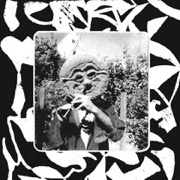
▶ Elijah Minnelli
Clams As A Main Meal
7 tracks, 26 min · name your price · logit -0.4 ± 0.3 · near Froid Dub · dub, reggae, cumbia, folk
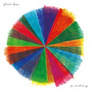
▶ Gianni Brezzo
The Awakening
7 tracks, 23 min · €5 or more · logit -0.5 ± 0.2 · 0.1 listens before · near SHOLTO, Huw Marc Bennett, Rachel Kitchlew · jazz, guitar, ambient, instrumental
▶ Rod Anton
Ubatuba
11 tracks, 48 min · €10 or more · logit -0.5 ± 0.2 · near The Co-Operators · dub, reggae, dancehall, roots
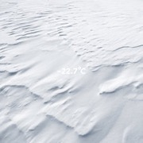
▶ Molecule
- 22.7°C
10 tracks, 65 min · €10 or more · logit -0.6 ± 0.2 · near Zentone · dub, electronic, downtempo, french
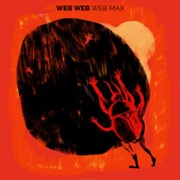
▶ Web Web
WEB MAX
10 tracks, 34 min · €8.50 or more · logit -0.6 ± 0.2 · near Rachel Kitchlew · jazz, german, instrumental, electronic
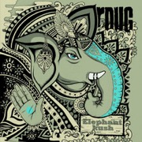
▶ R-DUG
Elephant Kush
12 tracks, 58 min · €5 or more · logit -0.6 ± 0.2 · near The Co-Operators, Zentone · dub, reggae, electro dub reggae
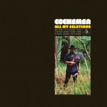
▶ Cochemea
All My Relations
10 tracks, 35 min · $10 or more · logit -0.6 ± 0.2 · 0.1 listens before · near Huw Marc Bennett, Rachel Kitchlew · jazz, new york, usa, world
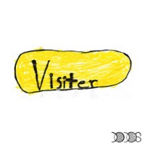
▶ The Dodos
Visiter
14 tracks, 59 min · $10 or more · logit -0.7 ± 0.2 · near Grizzly Bear · folk, indie, indie folk, acoustic
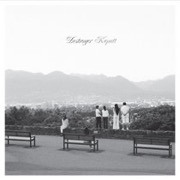
▶ Destroyer
Kaputt
9 tracks, 50 min · $9 or more · logit -0.7 ± 0.2 · 0.2 listens before · near The Clientele, The Walkmen, Grizzly Bear · indie, indie rock, singer-songwriter, canadian
▶ Cloud Management
V.A.
8 tracks, 35 min · €8 or more · logit -0.7 ± 0.2 · near Froid Dub · dub, electronic, electronica, minimal
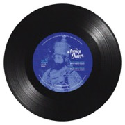
▶ Indica Dubs
Faith From Above
4 tracks, 14 min · £5 or more · logit -0.7 ± 0.2 · near The Co-Operators · dub, reggae, sound system, steppas
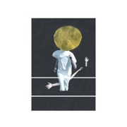
▶ The Vernon Spring
A Plane Over Woods
14 tracks, 33 min · £7 or more · logit -0.7 ± 0.2 · near Domenique Dumont, Woo · ambient, jazz, electronic, piano
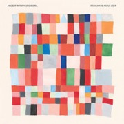
▶ Ancient Infinity Orchestra
It's always about love
8 tracks, 40 min · £8.99 or more · logit -0.7 ± 0.2 · near Huw Marc Bennett, SHOLTO · jazz, instrumental, leeds, united kingdom
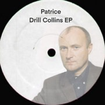
▶ Patrice
Drill Collins EP
4 tracks, 13 min · £2 or more · logit -0.7 ± 0.2 · near Matthew McAnuff, Art-X · reggae, soul, german, dancehall
▶ Daisuke Tanabe
Cat Steps
5 tracks, 22 min · $7 or more · logit -0.7 ± 0.2 · near pilotredsun · idm, electronic, ambient, experimental
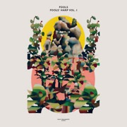
▶ Fools
Fools' Harp, Vol. 1
13 tracks, 50 min · €12 or more · logit -0.7 ± 0.2 · 0.2 listens before · near Domenique Dumont · ambient, electronic, folk, indie
▶ Damien Jurado
Caught in the Trees
8 tracks, 28 min · $8 or more · logit -0.7 ± 0.2 · near Woods · folk, singer-songwriter, indie, americana
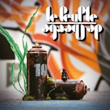
▶ Le Peuple de l'Herbe
10 (24-bit HD audio)
11 tracks, 39 min · €9 or more · logit -0.7 ± 0.2 · near Zentone · dub, electronic, french, drum and bass
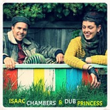
▶ Isaac Chambers
Isaac Chambers & Dub Princess
4 tracks, 20 min · $12 or more · logit -0.7 ± 0.2 · near Zentone · downtempo, dub, tribal
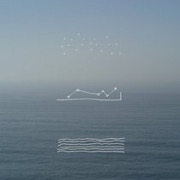
▶ Emily A. Sprague
Water Memory
5 tracks, 39 min · $7 or more · logit -0.7 ± 0.2 · 0.4 listens before · near Domenique Dumont · ambient, experimental, drone, minimal
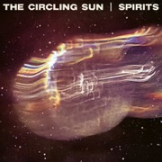
▶ The Circling Sun
Spirits
8 tracks, 48 min · £6.99 or more · logit -0.7 ± 0.2 · near Huw Marc Bennett · jazz, new zealand, cosmic, jazz fusion
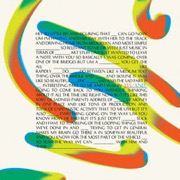
▶ yes/and
yes/and
10 tracks, 31 min · $10 or more · logit -0.7 ± 0.2 · 0.1 listens before · near Domenique Dumont, Woo · ambient, electronic, downtempo, experimental
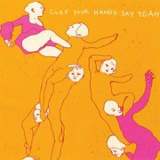
▶ Clap Your Hands Say Yeah
Clap Your Hands Say Yeah
12 tracks, 39 min · $7 or more · logit -0.7 ± 0.2 · near The Walkmen · indie, indie rock, alternative, indie pop
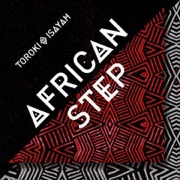
▶ Toroki
African Step
15 tracks, 64 min · €11 or more · logit -0.7 ± 0.2 · near The Co-Operators · digital, dub, reggae, roots
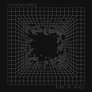
▶ HEAVENCHORD
Time in Space
5 tracks, 67 min · €6 or more · logit -0.7 ± 0.2 · 0.2 listens before · near Subset · ambient, dub techno, ambient techno, techno
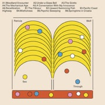
▶ Patricia Wolf
See-Through
12 tracks, 44 min · €9 or more · logit -0.7 ± 0.2 · 0.1 listens before · near Domenique Dumont, Woo · ambient, experimental, electronic, the flourishing zoo
▶ Salamanda
Sphere
8 tracks, 35 min · £8 or more · logit -0.7 ± 0.2 · 0.2 listens before · near Domenique Dumont · ambient, electronic, experimental, idm
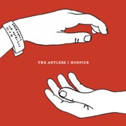
▶ The Antlers
Hospice
10 tracks, 52 min · $7 or more · logit -0.7 ± 0.2 · near Grizzly Bear · indie, indie rock, slowcore, singer-songwriter
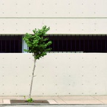
▶ M. Sage
Wants A Diamond Pivot Bright
16 tracks, 43 min · $7 or more · logit -0.7 ± 0.2 · near Woo · ambient, experimental, drone, psychedelic
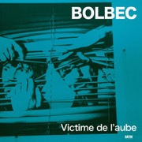
▶ Bolbec
Victime De L'aube
10 tracks, 26 min · £7 or more · logit -0.7 ± 0.2 · near SHOLTO · french, jazz, cinematic, french jazz
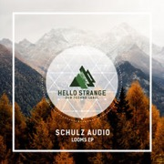
▶ Schulz Audio
Looms
5 tracks, 37 min · €7 or more · logit -0.7 ± 0.2 · 0.2 listens before · near Subset · dub techno, techno, deep dub ambient
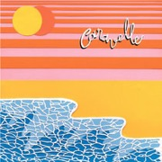
▶ Polo & Pan
Caravelle
streams only · logit -0.7 ± 0.2 · near Papooz, Oracle Sisters · french, indie pop, electronic, indie
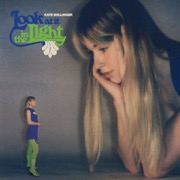
▶ Kate Bollinger
Look at it in the Light
6 tracks, 20 min · $5 or more · logit -0.7 ± 0.2 · near Oracle Sisters · indie, indie pop, pop, female vocalists
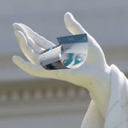
▶ Golden Living Room
POST-INTERNET
17 tracks, 63 min · $4.44 or more · logit -0.7 ± 0.2 · near desert sand feels warm at night · vaporwave, electronic, experimental, hypnagogic
▶ Fatbabs
DEEZ
10 tracks, 30 min · name your price · logit -0.7 ± 0.2 · near Biga*Ranx · france, reggae
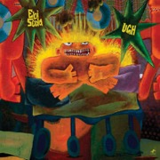
▶ Ebi Soda
Ugh
10 tracks, 42 min · £4.99 or more · logit -0.7 ± 0.2 · near SHOLTO, Huw Marc Bennett · jazz, fusion, uk, instrumental
▶ Amanda Whiting
After Dark
12 tracks, 47 min · £9 or more · logit -0.8 ± 0.2 · near SHOLTO · instrumental, jazz, experimental, harp
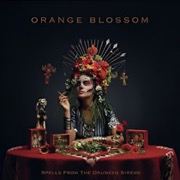
▶ Orange Blossom
Spells From the Drunken Sirens
streams only · logit -0.8 ± 0.2 · near Zentone · electronic, world music, dub, french
▶ Naâman
Temple Road
17 tracks, 58 min · $7 or more · logit -0.8 ± 0.2 · 0.1 listens before · near Biga*Ranx, Matthew McAnuff, Stand High Patrol · reggae, france, poland
▶ Sanchez
Time to start
12 tracks, 42 min · $7 or more · logit -0.8 ± 0.2 · near Barrington Levy · reggae, dancehall, lovers rock, soul
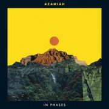
▶ Azamiah
In Phases
12 tracks, 37 min · €11 or more · logit -0.8 ± 0.2 · near Huw Marc Bennett · jazz, vocal, trombone, uk
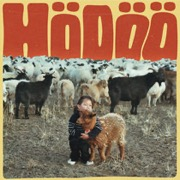
▶ Céline Dessberg
Hödöö
5 tracks, 19 min · €10 or more · logit -0.8 ± 0.2 · 0.2 listens before · near Oracle Sisters · french, singer-songwriter, france, psychedelic
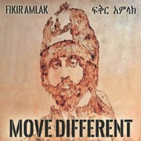
▶ Fikir Amlak
Move Different
10 tracks, 40 min · $9 or more · logit -0.8 ± 0.2 · near The Co-Operators · reggae, roots, dub, jamaica
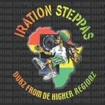
▶ Iration Steppas
Dubz From De Higher Regionz
15 tracks, 74 min · €20 or more · logit -0.8 ± 0.2 · 0.1 listens before · near Twilight Circus Dub Sound System · dub, reggae, roots, uk
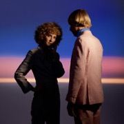
▶ Tennis
Swimmer
9 tracks, 31 min · $9 or more · logit -0.8 ± 0.2 · near Pearl & the Oysters · indie pop, lo-fi, indie, chillwave
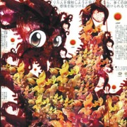
▶ Ilkae
Pistachio Island
45 tracks, 65 min · $5 or more · logit -0.8 ± 0.2 · under 0.1 listens before · near pilotredsun · idm, glitch, electronic, electronica
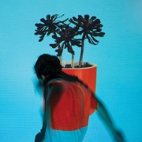
▶ Local Natives
Sunlit Youth
12 tracks, 46 min · $9 or more · logit -0.8 ± 0.2 · near Grizzly Bear · indie, indie rock, folk, indie pop
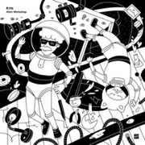
▶ R.Hz
Alien Workshop
4 tracks, 26 min · €6 or more · logit -0.8 ± 0.2 · 0.5 listens before · near Subset · dub techno, ambient, deep house
▶ Slag Boom Van Loon
So Soon
11 tracks, 64 min · £7.99 or more · logit -0.8 ± 0.2 · 0.2 listens before · near Boards of Canada · idm, ambient, electronic, downtempo
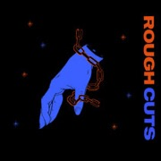
▶ Yoni Mayraz
Rough Cuts
5 tracks, 12 min · $7 or more · logit -0.8 ± 0.2 · near SHOLTO · jazz, electronic, jazz fusion, piano
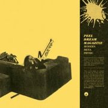
▶ Peel Dream Magazine
Modern Meta Physic
13 tracks, 40 min · $8 or more · logit -0.8 ± 0.2 · near The Clientele, The High Llamas · indie pop, dream pop, indie, shoegaze
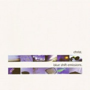
▶ Christ.
Blue Shift Emissions
11 tracks, 50 min · £5 or more · logit -0.8 ± 0.2 · near Boards of Canada, pilotredsun · idm, ambient, electronic, downtempo
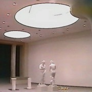
▶ Infinity Frequencies
Between Two Worlds
24 tracks, 34 min · $1 or more · logit -0.8 ± 0.2 · near desert sand feels warm at night · vaporwave, ambient, broken transmission, electronic
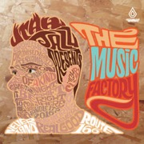
▶ Utah Jazz
The Music Factory
15 tracks, 69 min · £7 or more · logit -0.8 ± 0.2 · near Commix · drum and bass, liquid funk, jungle, drum n bass
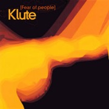
▶ Klute
Fear of People
13 tracks, 76 min · £8 or more · logit -0.8 ± 0.1 · near Commix · drum and bass, jungle, electronic, drum n bass
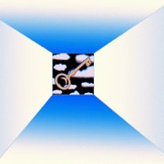
▶ Discovery Zone
Remote Control
10 tracks, 34 min · €10 or more · logit -0.8 ± 0.1 · near Domenique Dumont · electronic, indie pop, synthpop, ambient
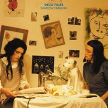
▶ Deux Filles
Shadow Farming
18 tracks, 39 min · £7 or more · logit -0.8 ± 0.1 · 0.1 listens before · near Woo · ambient, dream pop, experimental, art pop
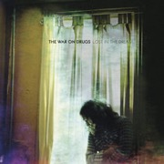
▶ The War on Drugs
Lost in the Dream
10 tracks, 61 min · $10 or more · logit -0.8 ± 0.1 · near The Walkmen · indie rock, indie, folk, folk rock
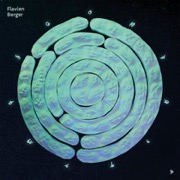
▶ Flavien Berger
Contre-Temps
13 tracks, 64 min · €9.99 or more · logit -0.8 ± 0.1 · near Papooz, Oracle Sisters · french, synthpop, france, psychedelic
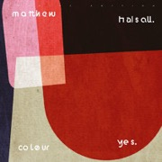
▶ Matthew Halsall
Colour Yes (Special Edition)
8 tracks, 67 min · £8.99 or more · logit -0.8 ± 0.1 · 0.1 listens before · near Huw Marc Bennett · jazz, trumpet, nu jazz, nu-jazz
▶ Akron/Family
Akron/Family
14 tracks, 56 min · $9.99 · logit -0.8 ± 0.1 · near Woods · folk, experimental, freak folk, indie
▶ Jah Acid Dub
Delayrium
10 tracks, 61 min · €8 or more · logit -0.8 ± 0.1 · near Twilight Circus Dub Sound System · dub, electronic, reggae, psydub
▶ Mort Garson
Mother Earth's Plantasia
10 tracks, 31 min · $9.99 or more · logit -0.8 ± 0.1 · 0.2 listens before · near Domenique Dumont · electronic, experimental, early electronic, moog
▶ Move 78
The Algorithm Smiles Upon You
8 tracks, 33 min · £7 or more · logit -0.8 ± 0.1 · near Huw Marc Bennett, SHOLTO, Rachel Kitchlew · jazz, instrumental, berlin, hip hop
▶ The Rootsman
Roots Bloody Rootsman
16 tracks, 74 min · £7 or more · logit -0.8 ± 0.1 · near Twilight Circus Dub Sound System · dub, reggae, electronic, balkan
▶ Phosphorescent
Muchacho
22 tracks, 120 min · $12 or more · logit -0.8 ± 0.1 · 0.1 listens before · near Woods · folk, singer-songwriter, indie, lo-fi
▶ 2814
Rain Temple
8 tracks, 66 min · £10 · logit -0.8 ± 0.1 · near desert sand feels warm at night · ambient, vaporwave, downtempo, electronic
▶ Substak
No Space Left
4 tracks, 18 min · €1 or more · logit -0.8 ± 0.1 · near Subset · ambient, techno, drone, dub techno
▶ LFO
LFO
4 tracks, 19 min · £4.50 or more · logit -0.8 ± 0.1 · near The Orb · techno, idm, electronic, warp
▶ Emanative
The Volume of the Light
17 tracks, 80 min · £7 or more · logit -0.8 ± 0.1 · 0.1 listens before · near Huw Marc Bennett · jazz, chillout, electronic, nu jazz
▶ strongboi
strongboi
7 tracks, 33 min · €8 or more · logit -0.8 ± 0.1 · near Oracle Sisters · funk, indie pop, chamber pop, electronic
▶ okvsho
Orange Wine
7 tracks, 27 min · €9 or more · logit -0.8 ± 0.1 · near SHOLTO · jazz, electronic, swiss, ambient
▶ The Polyphonic Spree
Together We're Heavy
10 tracks, 58 min · $7 or more · logit -0.8 ± 0.1 · near The High Llamas · indie, indie pop, alternative, pop
▶ SeekersInternational
LoversDedicationStation
13 tracks, 34 min · £5 or more · logit -0.8 ± 0.1 · near Froid Dub · dub, ambient, dub techno, electronic
▶ Avguchenko
Hypnotic View EP
4 tracks, 26 min · €4 or more · logit -0.8 ± 0.1 · near Subset · dub techno, ambient, electronic, techno
▶ Improvement Movement
Don't Delay, Join Today!
13 tracks, 39 min · name your price · logit -0.8 ± 0.1 · near Pearl & the Oysters · indie pop, psychedelic, indie rock, synthpop
▶ Camp Claude
Moody Moon
10 tracks, 32 min · €8 or more · logit -0.8 ± 0.1 · near Papooz · indie pop, synthpop, female vocalists, france
▶ Tender H
Episodes 06-15
10 tracks, 42 min · €11 or more · logit -0.8 ± 0.1 · near Subset · dub techno, dub, ambient, belarusian
▶ Neal Francis
Changes
8 tracks, 36 min · $8 or more · logit -0.8 ± 0.1 · near Adrian Quesada · psychedelic rock, rock, funk, blues
▶ BT Gate X-138
Slow Frequency Emitter
8 tracks, 57 min · €8 or more · logit -0.8 ± 0.1 · near Subset · dub techno, norway, ambient, dub
▶ The Sure Fire Soul Ensemble
Step Down
10 tracks, 35 min · $10 or more · logit -0.8 ± 0.1 · 0.1 listens before · near Adrian Quesada · funk, jazz, jazz fusion, soul
▶ Radikal Dub Kolektiv
Radikal Dub Kolektiv
12 tracks, 55 min · €8 or more · logit -0.8 ± 0.1 · near Twilight Circus Dub Sound System · dub, reggae, croatian, psycho reggae
▶ EZ3kiel
Barb4ry
11 tracks, 54 min · €4 or more · logit -0.8 ± 0.1 · near Zentone · dub, trip-hop, electronic, french
▶ Dylan Henner
You Always Will Be
10 tracks, 41 min · £10 or more · logit -0.8 ± 0.1 · near Domenique Dumont, Woo · ambient, experimental, electronic, minimal
▶ Deemkeyne
Ratio
7 tracks, 43 min · €5 or more · logit -0.8 ± 0.1 · near Subset · dub techno, techno, composer, germany
▶ Total Science
Audio Works 01 [CIAAWCD 1]
12 tracks, 74 min · £8.50 or more · logit -0.8 ± 0.1 · near Commix · drum and bass, jungle, electronic, dnb
▶ ddwy
Beaming Backwards
4 tracks, 21 min · £4.50 or more · logit -0.8 ± 0.1 · near Froid Dub · dub, ambient, chill, downtempo
▶ Nae:tek
Primal Dub, Vol. 8 (DJ Mix)
3 tracks, 22 min · £2.50 or more · logit -0.8 ± 0.1 · near Subset · dub techno, uk
▶ Lenzman
Earth Tones
10 tracks, 45 min · €7.50 or more · logit -0.8 ± 0.1 · near Commix · drum and bass, liquid funk, hip hop, soul
▶ Sully
Swandive
4 tracks, 19 min · £6 or more · logit -0.8 ± 0.1 · near Nia Archives · dubstep, future garage, bass, jungle
▶ Smith Westerns
Dye It Blonde
10 tracks, 35 min · $9 or more · logit -0.9 ± 0.1 · near Woods · lo-fi, garage rock, noise pop, indie
▶ O & the Mo
Make Way For The Sun
9 tracks, 31 min · $12 or more · logit -0.9 ± 0.1 · near Oracle Sisters · dream pop, indie pop, new zealand, psychedelic
▶ Instra:mental
Timelines
12 tracks, 67 min · £10 or more · logit -0.9 ± 0.1 · near Commix · drum and bass, dubstep, drumfunk, electronic
▶ Svaneborg Kardyb
Superkilen
9 tracks, 40 min · £8.99 or more · logit -0.9 ± 0.1 · near Huw Marc Bennett, SHOLTO · jazz, danish, denmark, instrumental
▶ Σtella
Up and Away
10 tracks, 31 min · $10 · logit -0.9 ± 0.1 · near Oracle Sisters · indie pop, greek, female vocalists, greece
▶ Parlor Greens
In Green We Dream
11 tracks, 35 min · $10 or more · logit -0.9 ± 0.1 · near Adrian Quesada · jazz, soul, funk, guitar
▶ FM Skyline
Illuminations
13 tracks, 44 min · $7 or more · logit -0.9 ± 0.1 · 0.2 listens before · near desert sand feels warm at night · vaporwave, electronic, synthwave, chillsynth
▶ Random Movement
Life is Permanent EP
4 tracks, 22 min · $3.99 or more · logit -0.9 ± 0.1 · near Commix · drum and bass, liquid funk, dnb, soulful drum and bass
▶ Nicolas Barnes
Ti Gde
4 tracks, 25 min · €3 or more · logit -0.9 ± 0.1 · 0.2 listens before · near Subset · dub techno, deep house, latvian
▶ Dubdadda
Lo-Fi Pon De Hi-Fi
streams only · logit -0.9 ± 0.1 · 0.2 listens before · near Twilight Circus Dub Sound System · dub, reggae, all, electro dub
▶ Remember
ルートバックホーム
7 tracks, 59 min · £10 · logit -0.9 ± 0.1 · 0.3 listens before · near desert sand feels warm at night · ambient, vaporwave, hardcore, hardcore punk
▶ Purelink
Purelink
2 tracks, 65 min · $10 or more · logit -0.9 ± 0.1 · near Woo, Domenique Dumont · ambient, electronic, ambient dub, dub
▶ Jimmy Whoo
Basic instinct
12 tracks, 33 min · €7 or more · logit -0.9 ± 0.1 · near Papooz · french, hip-hop, france, chillout
▶ Adam F
Colours
10 tracks, 58 min · £9.99 or more · logit -0.9 ± 0.1 · near Nia Archives · drum and bass, jungle, electronic, drum n bass
▶ Momus
Humperstinck
16 tracks, 60 min · €12 or more · logit -0.9 ± 0.1 · near The High Llamas · singer-songwriter, indie pop, electronic, indie
▶ Shinsuke Matsumoto
lantern
10 tracks, 69 min · $10 · logit -0.9 ± 0.1 · near Subset · dub techno, japanese, all, ambient
▶ el choop
Closing Motif EP
4 tracks, 29 min · €5 or more · logit -0.9 ± 0.1 · near Subset · techno, dub techno, welsh
▶ MUNYA
Voyage to Mars
12 tracks, 42 min · $9 or more · logit -0.9 ± 0.1 · near Pearl & the Oysters · dream pop, indie pop, psychedelic pop, psychedelic
▶ Vega Trails
Tremors in the Static
9 tracks, 36 min · £8.99 or more · logit -0.9 ± 0.1 · near Rachel Kitchlew · jazz, the flourishing zoo, british, instrumental
▶ midub
Tales EP
3 tracks, 17 min · name your price · logit -0.9 ± 0.1 · near Subset · deep, dub techno
▶ Lunar Vacation
Swell
5 tracks, 17 min · $7 or more · logit -0.9 ± 0.1 · near Pearl & the Oysters · dream pop, indie pop, indie, female vocalists
▶ 18 days
日が続く m e l i s s a
7 tracks, 31 min · name your price · logit -0.9 ± 0.1 · near desert sand feels warm at night · slushwave, ambient, dreampunk, vaporwave
▶ 4am Kru
High Time
4 tracks, 18 min · £4.50 or more · logit -0.9 ± 0.1 · near Nia Archives · jungle, rave, breakbeat, old school hardcore
▶ The Babies
The Babies
12 tracks, 55 min · $8.20 or more · logit -0.9 ± 0.1 · near Woods · lo-fi, garage rock, surf rock, indie
▶ Brijean
Feelings
11 tracks, 32 min · $9 or more · logit -0.9 ± 0.1 · near Pearl & the Oysters · house, indie pop, jazz, pop
▶ Pi Ja Ma
Magnetofille
12 tracks, 32 min · €9 or more · logit -0.9 ± 0.1 · near Papooz · france, indie pop, french, indie
▶ Roy Montgomery
Temple IV
9 tracks, 73 min · $9 or more · logit -0.9 ± 0.1 · near Woo · post-rock, ambient, space rock, drone
▶ Pépite
Les bateaux
4 tracks, 15 min · €4 or more · logit -0.9 ± 0.1 · near Papooz · france, french, pop, electronic
▶ Hamilton Leithauser
Dear God
13 tracks, 40 min · $7 or more · logit -0.9 ± 0.1 · 0.2 listens before · near The Walkmen · indie rock, singer-songwriter, indie, indie pop
▶ DJ Zinc
Wile Out
3 tracks, 15 min · £2 or more · logit -0.9 ± 0.1 · near Nia Archives · drum and bass, jungle, electronic, dnb
▶ Natalie Bergman
Keep Those Teardrops from Falling
4 tracks, 12 min · $5.16 or more · logit -0.9 ± 0.1 · near Oracle Sisters · indie pop, soul, folk, singer-songwriter
▶ Tapes 'n Tapes
The Loon
11 tracks, 41 min · $7 or more · logit -0.9 ± 0.1 · near The Walkmen · indie, indie rock, alternative, lo-fi
▶ Hallmark '87
A T R I U M
15 tracks, 54 min · name your price · logit -0.9 ± 0.1 · near desert sand feels warm at night · mallsoft, vaporwave, ambient, experimental
▶ Cyantific
Ghetto Blaster
13 tracks, 76 min · £9.25 or more · logit -0.9 ± 0.1 · near Commix · drum and bass, liquid funk, dnb, hospital records
▶ Polyrhythmics
Caldera
12 tracks, 60 min · $9.99 or more · logit -0.9 ± 0.1 · near Adrian Quesada · afrobeat, funk, jazz, instrumental
▶ Kessoncoda
Outerstate
10 tracks, 35 min · £8.99 or more · logit -0.9 ± 0.1 · near SHOLTO, Huw Marc Bennett · jazz, instrumental, electronic, nu jazz
▶ Basicnoise
Pattern Explorations
11 tracks, 78 min · €11 or more · logit -0.9 ± 0.1 · 0.1 listens before · near Subset · dub techno, minimal, electronic, ambient
▶ Moses Yoofee Trio
MYT
13 tracks, 37 min · €10 or more · logit -0.9 ± 0.1 · near SHOLTO, Rachel Kitchlew · jazz, german, instrumental, jazz fusion
▶ Kainalu
Lotus Gate
8 tracks, 37 min · name your price · logit -0.9 ± 0.1 · near Pearl & the Oysters · indie pop, psychedelic, electronic, synthpop
▶ Mamalarky
Mamalarky
10 tracks, 30 min · $13 or more · logit -0.9 ± 0.1 · near Pearl & the Oysters · indie rock, dream pop, united states, indie pop
▶ Miel De Montagne
Miel de Montagne
11 tracks, 39 min · €9.99 or more · logit -0.9 ± 0.1 · near Papooz, Oracle Sisters · france, french, dream pop, indie pop
▶ Seba
Identity
10 tracks, 61 min · €9.99 or more · logit -0.9 ± 0.1 · near Commix · drum and bass, atmospheric drum and bass, drumfunk, dnb
▶ Sraunus
atmospheric insomnia
8 tracks, 68 min · €10 or more · logit -0.9 ± 0.1 · near Subset · dub techno, ambient, ambient techno, minimal
▶ Deerhunter
Microcastle
25 tracks, 83 min · $13 or more · logit -0.9 ± 0.1 · 0.1 listens before · near Grizzly Bear, The Walkmen · shoegaze, experimental, psychedelic, indie
▶ King Tuff
King Tuff
12 tracks, 40 min · $10 · logit -0.9 ± 0.1 · near Woods · garage rock, lo-fi, psychedelic, garage pysch
▶ Ekstendia
Roots
3 tracks, 26 min · $6 or more · logit -0.9 ± 0.1 · near Subset · dub techno, minimal techno, dub deep shamanic, dub deep shamanic techno
▶ The Felice Brothers
Yonder is the Clock
13 tracks, 55 min · $7 or more · logit -0.9 ± 0.1 · near Woods · folk, americana, alt-country, indie folk
▶ Paperclip Minimiser
II
7 tracks, 37 min · $9 or more · logit -0.9 ± 0.1 · near Froid Dub · dub, ambient, idm, techno
▶ Alex Reece
Alex Reece - The ElectroFlyz Series Vol.1
6 tracks, 27 min · £5 or more · logit -0.9 ± 0.1 · 0.2 listens before · near Nia Archives · drum and bass, jungle, electronic, dnb
▶ HKE
HK
7 tracks, 51 min · £10 · logit -0.9 ± 0.1 · near desert sand feels warm at night · vaporwave, ambient, electronic, dreampunk
▶ Dent May
Warm Blanket
11 tracks, 41 min · $9.99 or more · logit -0.9 ± 0.1 · near Pearl & the Oysters · indie pop, singer-songwriter, acoustic, indie
▶ Freescha
Kids Fill the Floor
13 tracks, 52 min · $10 or more · logit -1.0 ± 0.1 · 0.1 listens before · near Boards of Canada · idm, ambient, electronic, atmospheric
▶ Nae-tek
Primal Dub ( Original Mix )
3 tracks, 22 min · £2.50 or more · logit -1.0 ± 0.1 · near Subset · house, techno, dub techno
▶ Emma-Jean Thackray
Yellow
14 tracks, 49 min · £8 or more · logit -1.0 ± 0.1 · 0.1 listens before · near Huw Marc Bennett · jazz, electronic, british, trumpet
▶ Cléa Vincent
Non mais oui
6 tracks, 24 min · €5 or more · logit -1.0 ± 0.1 · 0.3 listens before · near Papooz · synthpop, french, electronic, indie pop
▶ 天堂山
天堂山：最精美的收藏
20 tracks, 345 min · name your price · logit -1.0 ± 0.1 · near desert sand feels warm at night · ambient, british, slushwave
▶ Tindersticks
Tindersticks
20 tracks, 99 min · €14 or more · logit -1.0 ± 0.1 · 0.1 listens before · near The High Llamas · chamber pop, indie, alternative, indie rock
▶ Myd
Born A Loser
14 tracks, 52 min · €10 or more · logit -1.0 ± 0.1 · 0.1 listens before · near Papooz · french, house, electronic, french house
▶ Microdisney
Everybody is Fantastic
14 tracks, 44 min · £7.99 · logit -1.0 ± 0.1 · near The High Llamas · new wave, pop, 80s, indie pop
▶ Blu Mar Ten
The Six Million Names of God
17 tracks, 63 min · £8.99 or more · logit -1.0 ± 0.1 · near Commix · drum and bass, atmospheric drum and bass, ambient, electronic
▶ Tokyo Tea Room
No Rush
12 tracks, 36 min · €12 · logit -1.0 ± 0.1 · near Oracle Sisters · dream pop, indie pop, bedroom pop, indie
▶ Barrie
Happy To Be Here
10 tracks, 34 min · $8 or more · logit -1.0 ± 0.1 · near Pearl & the Oysters · dream pop, indie pop, indie, female vocalists
▶ Mr. Cloudy
Recluse
9 tracks, 73 min · €9 · logit -1.0 ± 0.1 · 0.1 listens before · near Subset · dub techno, dub, ambient, techno
▶ Say She She
Prism
8 tracks, 29 min · $10 or more · logit -1.0 ± 0.1 · near Adrian Quesada · funk, soul, pop, rnb
▶ haircuts for men
a path
5 tracks, 48 min · £10 · logit -1.0 ± 0.1 · near desert sand feels warm at night · vaporwave, chillwave, electronic, barber beats
▶ Oscar Anton
Home of Sanity (the playlist)
9 tracks, 18 min · €10 or more · logit -1.0 ± 0.1 · near Papooz · french, pop, electronic, indie pop
▶ The Cribs
Men's Needs, Women's Needs, Whatever
35 tracks, 122 min · £6.99 or more · logit -1.0 ± 0.1 · near The Walkmen · indie rock, indie, british, alternative
▶ Bop
Remix Your Mind
5 tracks, 31 min · £5.25 or more · logit -1.0 ± 0.1 · near Clubroot · microfunk, drum and bass, idm, electronic
▶ Japandroids
Celebration Rock
8 tracks, 35 min · $10 or more · logit -1.0 ± 0.1 · near The Walkmen · noise rock, garage rock, indie, indie rock
▶ Asta Hiroki
Entropy
10 tracks, 37 min · £7.99 or more · logit -1.0 ± 0.1 · near SHOLTO · british, instrumental, brighton, experimental
▶ Delvon Lamarr Organ Trio
I Told You So
9 tracks, 41 min · $10 or more · logit -1.0 ± 0.1 · near Adrian Quesada · funk, jazz, instrumental, fusion
▶ Cassia
Reaching the Ruins — EP (Instrumental)
8 tracks, 34 min · $7 or more · logit -1.0 ± 0.1 · near Oracle Sisters · indie pop, indie, indie rock, synthpop
▶ Ocote Soul Sounds
Taurus
12 tracks, 48 min · $8 or more · logit -1.0 ± 0.1 · near Adrian Quesada · afrobeat, latin, trip hop, funk
▶ Bleu Toucan
Origami
4 tracks, 15 min · €2.99 or more · logit -1.0 ± 0.1 · 0.2 listens before · near Papooz · french, soul, france, synthpop
▶ Sofie Royer
Cult Survivor
12 tracks, 39 min · $10 or more · logit -1.0 ± 0.1 · near Pearl & the Oysters · indie pop, austrian, indie, pop
▶ Pilotredsky
Doggone Systems EP
5 tracks, 21 min · $3 or more · logit -1.0 ± 0.1 · near pilotredsun · idm, downtempo, drill and bass, drum and bass
▶ Husbands
After the Gold Rush Party
13 tracks, 36 min · name your price · logit -1.0 ± 0.1 · near Oracle Sisters · indie pop, synthpop, electronic, indie
▶ McCarthy
Banking, Violence and the Inner Life Today
streams only · logit -1.0 ± 0.1 · near The Clientele · indie pop, c86, twee, indie
▶ Vytis
Deepchord Avenue
10 tracks, 75 min · €6 or more · logit -1.0 ± 0.1 · near Subset · dub techno, techno, ambient, electronic
▶ Dave Marian
Pleiades
5 tracks, 42 min · €1.80 or more · logit -1.0 ± 0.1 · near Subset · dub techno, ambient, acoustic, electronica
▶ Overcast Sound
Water Lines
5 tracks, 49 min · €7 or more · logit -1.0 ± 0.1 · near Subset · dub techno, dub, ambient, deep techno
▶ Gwenno Morgan
gwyw
12 tracks, 31 min · £7 or more · logit -1.0 ± 0.1 · near SHOLTO · jazz, piano, composer, welsh
▶ Summer Salt
Driving to Hawaii
6 tracks, 21 min · $5 or more · logit -1.0 ± 0.1 · near Oracle Sisters · indie, indie pop, surf, surf rock
▶ Bad Company UK
The Nine (Remastered)
3 tracks, 19 min · £3 · logit -1.0 ± 0.1 · near Commix · drum and bass, techstep, jungle, dnb
▶ twen
One Stop Shop
10 tracks, 38 min · $10 or more · logit -1.0 ± 0.1 · near Oracle Sisters · indie pop, shoegaze, indie rock, psychedelic
▶ Monade
Puni
11 tracks, 44 min · €5 or more · logit -1.0 ± 0.1 · near The High Llamas · dream pop, french, indie, indie pop
▶ Wild Beasts
Two Dancers
11 tracks, 43 min · $9.99 or more · logit -1.0 ± 0.1 · near Grizzly Bear · indie rock, indie, british, indie pop
▶ Astrid Sonne
Great Doubt
9 tracks, 27 min · €8 or more · logit -1.0 ± 0.1 · near Woo · experimental, ambient, electronic, glitch
▶ The National
Boxer
12 tracks, 43 min · £9.99 or more · logit -1.0 ± 0.1 · near The Walkmen · indie rock, indie, alternative, alternative rock
▶ Gruff Rhys
American Interior
23 tracks, 82 min · £9.99 or more · logit -1.0 ± 0.1 · near The High Llamas · indie, singer-songwriter, welsh, indie pop
▶ Enigma Dubz
The Journey so Far, Pt. 1
11 tracks, 55 min · £7 or more · logit -1.0 ± 0.1 · near Clubroot · dubstep, electronic, ambient, uk garage
▶ Louis Philippe
Delta Kiss/Sunshine
17 tracks, 53 min · £7.99 or more · logit -1.0 ± 0.1 · near The High Llamas · chamber pop, french, indie pop, pop
▶ Jafu
Second Impressions
13 tracks, 54 min · £8 or more · logit -1.1 ± 0.1 · 0.2 listens before · near Clubroot · dubstep, idm, deep dubstep, canadian
▶ Avey Tare
Down There
9 tracks, 35 min · £9.99 or more · logit -1.1 ± 0.1 · 0.2 listens before · near Grizzly Bear · experimental, psychedelic, freak folk, electronic
▶ Lee Fields & The Expressions
Special Night
10 tracks, 39 min · $9.99 or more · logit -1.1 ± 0.1 · near Adrian Quesada · soul, funk, blues, vintage
▶ Ulterior Motive
The Real - EP
4 tracks, 23 min · £5.96 or more · logit -1.1 ± 0.1 · near Commix · drum and bass, neurofunk, techstep, dnb
▶ Orgone
The Killion Floor
17 tracks, 76 min · $9.99 or more · logit -1.1 ± 0.1 · near Adrian Quesada · funk, technical death metal, soul, afrobeat
▶ Tim Kossmann
In The Garden EP
8 tracks, 62 min · €5 or more · logit -1.1 ± 0.1 · near Subset · dub techno, ambient
▶ Atlas Sound
Logos
11 tracks, 44 min · $9 or more · logit -1.1 ± 0.1 · 0.2 listens before · near Grizzly Bear · shoegaze, experimental, psychedelic, ambient
▶ death's dynamic shroud.wmv
世界大戦OLYMPICS
18 tracks, 59 min · name your price · logit -1.1 ± 0.1 · near desert sand feels warm at night · vaporwave, electronic, experimental, plunderphonics
▶ Tim Reaper
In Full Effect
8 tracks, 46 min · £9 or more · logit -1.1 ± 0.1 · 0.2 listens before · near Nia Archives · jungle, ambient, breakbeat, experimental electronic
▶ Klangkarussell
nineteentilltwentytwo
streams only · logit -1.1 ± 0.1 · 2 tracks heard before · near Roya · house, minimal, electro, electronic
▶ Alan Munson
One Man's Journey
13 tracks, 48 min · $8 or more · logit -1.1 ± 0.1 · near Sandy's · usa
▶ The New Mastersounds
Breaks from the Border
11 tracks, 48 min · £8 or more · logit -1.1 ± 0.1 · near Adrian Quesada · funk, jazz, jazz funk, deep funk
▶ Lee Fields
Sentimental Fool
12 tracks, 38 min · $10 or more · logit -1.1 ± 0.1 · near Adrian Quesada · soul, funk, deep funk, daptone
▶ Durand Jones & The Indications
American Love Call
12 tracks, 43 min · $10 · logit -1.1 ± 0.1 · near Adrian Quesada · soul, neo-soul, rnb, american
▶ Dave Guy
Ruby
12 tracks, 30 min · $9.99 or more · logit -1.1 ± 0.1 · near Salvator Dragatto · jazz, trumpet, instrumental, smooth jazz
▶ Cory Hanson
The Unborn Capitalist From Limbo
8 tracks, 31 min · $9 or more · logit -1.1 ± 0.1 · near Woods · usa, psychedelic rock, freak folk, psychedelic
▶ Ocralab
Nocturnal Transitions
4 tracks, 29 min · €3.50 or more · logit -1.1 ± 0.1 · near Subset · dub techno, ambient, techno, minimal
▶ Bill Laurance
Keeping Company
11 tracks, 43 min · €10 or more · logit -1.2 ± 0.1 · near SHOLTO, Rachel Kitchlew · jazz, electronic, piano, instrumental
▶ The Altons
Heartache in Room 14
10 tracks, 36 min · $10 or more · logit -1.2 ± 0.1 · near Adrian Quesada · soul, psychedelic, los angeles, usa
▶ Daoud
ok
14 tracks, 46 min · €10 or more · logit -1.2 ± 0.1 · near Rachel Kitchlew · french, jazz, instrumental, trumpet
▶ Qwalia
Sound & Reason
7 tracks, 41 min · £10 or more · logit -1.2 ± 0.1 · near Salvator Dragatto · jazz, psychedelic, funky, guitar
▶ Sulah Jordan
Lady Bug
4 tracks, 25 min · $4 or more · logit -1.2 ± 0.1 · near Salvator Dragatto · ambient, jazz, groove, san francisco
▶ The Field Mice
Snowball
8 tracks, 34 min · £5 or more · logit -1.2 ± 0.1 · near The Clientele · twee, indie pop, twee pop, sarah records
▶ Benny Bock
Vanishing Act
10 tracks, 34 min · $10 or more · logit -1.3 ± 0.1 · 0.1 listens before · near Salvator Dragatto · ambient, guitar, folk, jazz
▶ Feed LA
Feed LA
10 tracks, 31 min · $7 or more · logit -1.3 ± 0.1 · near Salvator Dragatto · jazz, jazz-rock
▶ Paul & The Tall Trees
Our Love In the Light
10 tracks, 27 min · $9.99 or more · logit -1.3 ± 0.1 · near Sandy's · americana, indie, warm, yearning
▶ Papa Romeo
Late Night Load Out
8 tracks, 28 min · €10 or more · logit -1.3 ± 0.1 · near Salvator Dragatto · jazz, soul, electronic, funk
▶ Dan Romer
Little House on the Prairie, Season 1 (Soundtrack From The Netflix Series)
27 tracks, 45 min · $10 or more · logit -1.3 ± 0.1 · near Will Wiesenfeld · soundtrack, composer, american, easy listening
▶ Rebecca Sugar
spiral bound
6 tracks, 13 min · $4 or more · logit -1.3 ± 0.1 · near Will Wiesenfeld · rhombus, soundtrack, freterator, pop
▶ Tom Salta
Halo: Spartan Assault
27 tracks, 50 min · $9.99 or more · logit -1.3 ± 0.1 · near Will Wiesenfeld · soundtrack, instrumental, video game music, trailer music
▶ Lena Raine
Celeste (Original Soundtrack)
6 tracks, 11 min · name your price · logit -1.4 ± 0.1 · near Will Wiesenfeld · electronic, soundtrack, ambient, chiptune
▶ Abram Shook
Love at Low Speed
10 tracks, 41 min · $10 · logit -1.4 ± 0.1 · 0.2 listens before · near Sandy's · american, austin tx, ambient, indie
▶ Alec Holowka
Night in the Woods (Original Soundtrack, Vol. 1) [At the End of Everything]
62 tracks, 192 min · $7 or more · logit -1.4 ± 0.1 · under 0.1 listens before · near Will Wiesenfeld · ambient, soundtrack, indie, video game music
▶ Nora Stanley
Glass
9 tracks, 37 min · $10 or more · logit -1.4 ± 0.1 · near Salvator Dragatto · ambient, jazz, experimental, flute
▶ Yellowbirds
Songs from the Vanished Frontier
9 tracks, 35 min · $9 or more · logit -1.4 ± 0.1 · near Sandy's · psychedelic pop, dream pop, psychedelic, indie pop
▶ FOREST LAW
Zero
10 tracks, 40 min · €8 or more · logit -1.4 ± 0.1 · near Salvator Dragatto · alternative, pop, british
▶ scntfc
Oxenfree
21 tracks, 76 min · name your price · logit -1.4 ± 0.1 · under 0.1 listens before · near Will Wiesenfeld · soundtrack, instrumental, video game music, electronic
▶ Skjold
Thirteen Years Hell
13 tracks, 66 min · €3.33 or more · logit -1.4 ± 0.1 · near Salvator Dragatto · raw black metal, black metal, danish, danish black metal
▶ E. Lundquist
Art Between Minds
10 tracks, 31 min · £8.99 or more · logit -1.4 ± 0.1 · near Salvator Dragatto · united states, usa
▶ Boz Metzdorf
Signs of Seasons
11 tracks, 40 min · $9.99 or more · logit -1.5 ± 0.1 · 0.2 listens before · near Sandy's · 70s, folk, american, usa
▶ Ojard
Euphonie
10 tracks, 27 min · €8 or more · logit -1.5 ± 0.2 · near Salvator Dragatto · france, french
▶ The Ruminaters
Welcome To Flight: S.U.N. 91
14 tracks, 39 min · $10 or more · logit -1.6 ± 0.2 · near Sandy's · garage, garage rock, alternative, indie
▶ Ziggy Marley
Dragonfly
logit -0.5 ± 0.2 · near Bob Marley & The Wailers · reggae, roots reggae, jamaica, jamaican
▶ Alpha Blondy
Jah Victory
logit -0.5 ± 0.2 · 0.1 listens before · near Matthew McAnuff, Bob Marley & The Wailers · reggae, roots reggae, african, world
Tom Fire
Hôtel Costes 15
logit -0.5 ± 0.2 · near Joe Yorke · reggae, dub, french, singer-songwriter
▶ Damian Marley
Welcome to Jamrock
logit -0.6 ± 0.2 · 0.1 listens before · near Bob Marley & The Wailers · reggae, dancehall, jamaica, ragga
Noel Ellis
Noel Ellis
logit -0.6 ± 0.2 · 2 tracks heard before · near The Co-Operators · reggae, jamaica, male vocalists, roots
▶ Pernice Brothers
Discover a Lovelier You
logit -0.7 ± 0.2 · near The High Llamas · indie pop, indie, indie rock, chamber pop
▶ Jah Melodie
Thanks and Praises
logit -0.7 ± 0.2 · near The Co-Operators · dub, reggae, netherlands, under 2000 listeners
Pierpoljak
Kingston Karma
logit -0.7 ± 0.2 · near Matthew McAnuff, Biga*Ranx · reggae, french, french reggae, francais
♪ ▶ Tiburk
Electronic Landscape
logit -0.7 ± 0.2 · 0.5 listens before · near The Co-Operators · dub, dubstep, electro dub, electro-dub
Vanupié
Janus
logit -0.8 ± 0.2 · near Matthew McAnuff, Biga*Ranx · french, reggae
Burial & Four Tet
Wolf Cub & Moth
logit -0.8 ± 0.2 · near Burial · dubstep, electronic, ambient, idm
Alpha & Omega meets The Disciples
The Sacred Art Of Dub
logit -0.8 ± 0.2 · near Twilight Circus Dub Sound System · dub, reggae, focus on, sweet ridim
Basque Dub Foundation
Substrain Roots Dub
logit -0.8 ± 0.2 · near Twilight Circus Dub Sound System · dub, reggae, basque, dub reggae
▶ The Left Banke
Walk Away Renée/Pretty Ballerina
logit -0.8 ± 0.1 · near Brian Wilson · baroque pop, 60s, psychedelic, pop
▶ Paul & Linda McCartney
Ram
logit -0.8 ± 0.1 · near Brian Wilson · classic rock, rock, 70s, pop
▶ Komeda
What Makes It Go?
logit -0.8 ± 0.1 · near The High Llamas · indie pop, swedish, indie, female vocalists
▶ Ringo Starr
Ringo
logit -0.8 ± 0.1 · near Brian Wilson · classic rock, rock, british, 70s
▶ Spacetime Continuum
Sea Biscuit
logit -0.8 ± 0.1 · 0.1 listens before · near The Orb · ambient, idm, electronic, chillout
▶ Marcus Intalex
Fourfit EP 08
logit -0.8 ± 0.1 · near Commix · drum and bass, liquid funk, dnb, drum n bass
▶ Break
Another Way
logit -0.8 ± 0.1 · near Commix · drum and bass, neurofunk, darkstep, dnb
Massive Attack vs Burial
Four Walls / Paradise Circus
logit -0.8 ± 0.1 · near Burial · trip-hop, ambient, dubstep, experimental
▶ The Irresistible Force
Its Tomorrow Already
logit -0.8 ± 0.1 · 0.2 listens before · near The Orb · ambient, downtempo, chillout, electronic
▶ Roots Control
Dread Western
logit -0.8 ± 0.1 · 0.1 listens before · near Twilight Circus Dub Sound System · dub, illbient, reggae, downtempo
▶ The Silver Seas
High Society
logit -0.8 ± 0.1 · near The High Llamas · indie, indie pop, alternative, pop
▶ LA LOM
La Lom
logit -0.9 ± 0.1 · near Adrian Quesada · jazz, psychedelic, latin, usa
▶ Alina Bzhezhinska
Inspiration
logit -0.9 ± 0.1 · near Rachel Kitchlew · jazz, instrumental, harp, ukrainian
▶ Wings
Back To The Egg
logit -0.9 ± 0.1 · near Brian Wilson · classic rock, rock, 70s, british
Vibronics and Jah Free
Sound System At Batofar Live
logit -0.9 ± 0.1 · near Twilight Circus Dub Sound System · dub, reggae-dub, reggae, uk
▶ Bob Dylan and The Band
The Basement Tapes
logit -0.9 ± 0.1 · near Brian Wilson · folk rock, classic rock, folk, singer-songwriter
♪ ▶ Art of Noise
Daft
logit -0.9 ± 0.1 · 0.1 listens before · near The Orb · electronic, ambient, experimental, 80s
▶ Holy Tongue, Shackleton
The Tumbling Psychic Joy of Now
logit -0.9 ± 0.1 · near Froid Dub · chillout, dub, electronic, london
▶ Ghosts of Paraguay
Silent Souls
logit -0.9 ± 0.1 · near Clubroot · dubstep, ambient, chillout, chillstep
The Parcels
Clockscared EP
logit -0.9 ± 0.1 · near Oracle Sisters, Papooz · funk, indie, indie pop, synthpop
▶ Roni Size
New Forms
logit -0.9 ± 0.1 · under 0.1 listens before · near Nia Archives · drum and bass, jungle, electronic, drum n bass
▶ Bruno Coulais
Coraline
logit -0.9 ± 0.1 · near Will Wiesenfeld · soundtrack, french, instrumental, classical
Burial & Four Tet & Thom Yorke
Ego / Mirror
logit -0.9 ± 0.1 · near Burial · dubstep, electronic, experimental, idm
▶ M-Beat
Knowledge
logit -0.9 ± 0.1 · near Nia Archives · jungle, ragga jungle, drum and bass, breakbeat
▶ James Blake
James Blake
logit -0.9 ± 0.1 · near Burial · dubstep, electronic, experimental, soul
▶ The Millennium
Begin
logit -0.9 ± 0.1 · near Brian Wilson · sunshine pop, psychedelic, 60s, baroque pop
▶ Her
Her Tape #1
logit -0.9 ± 0.1 · near Papooz · french, industrial, indie, soul
Alex Humann
Dawn
logit -0.9 ± 0.1 · near Subset · dub techno, dub, techno, electronic
▶ Kazy Lambist
33 000 FT.
logit -0.9 ± 0.1 · near Papooz · chillout, french, electronic, indie
▶ Richard Hawley
Coles Corner
logit -0.9 ± 0.1 · near The Clientele · singer-songwriter, indie, indie pop, britpop
▶ Ohrwert
Fidelis / Blavus
logit -0.9 ± 0.1 · 0.2 listens before · near Subset · dub techno, ambient, dutch, techno
▶ Origin Unknown
Valley of the Shadows
logit -0.9 ± 0.1 · 1 listen before · near Nia Archives · drum and bass, jungle, drum n bass, techstep
Ruts DC vs. Zion Train
Rhythm Collision Remix
logit -0.9 ± 0.1 · near Twilight Circus Dub Sound System · dub, reggae, electronic, positive
▶ Léon Phal
Stress Killer
logit -1.0 ± 0.1 · near SHOLTO · jazz, french, composer, instrumental
▶ Saint Etienne
Foxbase Alpha
logit -1.0 ± 0.1 · near The High Llamas · electronic, indie pop, pop, female vocalists
Highvisators
High Tone meets Improvisators Dub
logit -1.0 ± 0.1 · near Twilight Circus Dub Sound System · dub, electronic, french, french dub
▶ Ted Leo and the Pharmacists
Shake the Sheets
logit -1.0 ± 0.1 · near The Walkmen · indie rock, indie, punk, rock
▶ Cold War Kids
Robbers & Cowards
logit -1.0 ± 0.1 · near The Walkmen · indie rock, indie, alternative, rock
▶ Brian Wilson and Van Dyke Parks
Orange Crate Art
logit -1.0 ± 0.1 · near Brian Wilson · surf rock, pop, singer-songwriter, 80s
Clipz
No Time (feat. Nia Archives, Beenie Man, Cristale & ShaSimone)
logit -1.0 ± 0.1 · near Nia Archives · drum and bass, jungle, clownstep, dnb
▶ Gil Scott-Heron and Jamie xx
We're New Here
logit -1.0 ± 0.1 · near Burial · dubstep, electronic, experimental, ambient
▶ Laurent Bardainne
Hymne au soleil
logit -1.0 ± 0.1 · near Papooz · french, jazz, saxophone
▶ Zzzzra
L'entraide
logit -1.0 ± 0.1 · near Subset · dub techno, minimal, ambient, electronic
Dillinja
Cybotron
logit -1.0 ± 0.1 · near Commix, Nia Archives · drum and bass, jungle, drum n bass, dnb
▶ Stephen Malkmus and the Jicks
Pig Lib
logit -1.0 ± 0.1 · 0.1 listens before · near Woods, The Walkmen · indie rock, indie, alternative, lo-fi
The Tuss
Rushup Edge
logit -1.0 ± 0.1 · near Boards of Canada, pilotredsun · idm, electronic, acid, experimental
▶ Ram Trilogy
Titan EP
logit -1.1 ± 0.1 · near Commix · drum and bass, jungle, dnb, drum n bass
▶ bleu soleil
Soleil Bleu
logit -1.1 ± 0.1 · near Biga*Ranx, Zentone · electronic, french, dub, dubstep
▶ Lilly Wood & The Prick
Prayer In C
logit -1.1 ± 0.1 · near Papooz · french, indie, indie pop, folk
▶ Elderbrook
Inner Light
logit -1.1 ± 0.1 · 2 listens before · near Roya · electronic, house, chillout, deep house
▶ Feu! Chatterton
Palais d'argile
logit -1.1 ± 0.1 · near Papooz · french, rock, france, pop
▶ LaVern
Hold Me
logit -1.2 ± 0.1 · near Roya · house, dutch, edm, electronic
▶ The Newton Brothers
The Haunting of Bly Manor (Music from the Netflix Horror Series)
logit -1.2 ± 0.1 · near Will Wiesenfeld · soundtrack, composer, score, ambient
▶ Katerine
Robots Après Tout
logit -1.2 ± 0.1 · near Papooz · french, pop, electronic, chanson francaise
▶ Zen/it
Ego
logit -1.2 ± 0.1 · near Roya · electronic, house, deep house, italy
▶ Christophe Héral
Rayman Legends (Original Game Soundtrack)
logit -1.2 ± 0.1 · near Will Wiesenfeld · soundtrack, composer, video game music, french
▶ Gravagerz
Chihiro
logit -1.2 ± 0.1 · near Roya · electronic, house, luxembourg, producer
KaloZoic
不平和モダニズム
logit -1.2 ± 0.1 · near BLACK SHIP · visual kei, j-rock, disbanded, my favorite
▶ John Paesano
Marvel’s Spider-Man: Miles Morales (Original Video Game Soundtrack)
logit -1.2 ± 0.1 · near Will Wiesenfeld · soundtrack, composer, instrumental, video game music
▶ Oskar med K
Make Me Feel
logit -1.2 ± 0.1 · near Roya · electronic, house, norwegian, progressive house
Kip Nelson
Noon
logit -1.2 ± 0.1 · near Sandy's · psychadelic new-wave
独立国歌-Ashe'-
夢追ヰPARADOX
logit -1.3 ± 0.1 · near BLACK SHIP · visual kei, j-rock, indies, japanese
Łaszewo
messy
logit -1.3 ± 0.1 · near Roya · electronic, pop, california, electropop
Played, not owned Unowned albums you have played in the last year, the most listened to towards the top, with one Bandcamp sells counted as if heard 3 times as often; the order shifts a little each load. buy? marks one past 2 listens of the whole album on 2 days.
▶ Count Dubulabuy?, saved on Spotify
The Rise Of Count Dubula
6 tracks, 22 min · $5 or more · 26.5 listens on 26 days, 17 Apr to 21 Aug
▶ Domenique Dumontbuy?, saved on Spotify
MINIATURES DE AUTO RHYTHM
8 tracks, 30 min · €8 or more · 15.4 listens on 21 days, Sep 2025 to 29 Oct
▶ Alien Trackersbuy?, saved on Spotify
Dubs from Vortex Beach
12 tracks, 38 min · €9 or more · 19.8 listens on 20 days, Jan 2026 to 30 Oct
▶ William Tylerbuy?, saved on Spotify
Modern Country
7 tracks, 40 min · $9 or more · 11.4 listens on 16 days, 18 May to 19 Aug
▶ Rickard Jäverlingbuy?, saved on Spotify
Album 4
9 tracks, 34 min · €14.99 or more · 11.7 listens on 13 days, 12 Apr to 1 Sep
▶ Alvvaysbuy?, saved on Spotify
Antisocialites
10 tracks, 33 min · $10 or more · 13.7 listens on 16 days, 24 Mar to 28 Jun
▶ Zentonebuy?, saved on Spotify
Messenger
9 tracks, 38 min · €9 or more · 11.9 listens on 16 days, Oct 2025 to 7 Jun
▶ A.R.T. Wilsonbuy?, saved on Spotify
Overworld
10 tracks, 38 min · $7 · 14 listens on 16 days, 26 Feb to 20 May
▶ Oracle Sistersbuy?
Paris II
5 tracks, 19 min · $7 or more · 6.4 listens on 6 days, 19 Aug to 20 Oct
▶ Nina Girassóisbuy?, saved on Spotify
Superfluido
10 tracks, 32 min · €11 or more · 15.8 listens on 16 days, Dec 2025 to 25 Jun
▶ Subsetbuy?, saved on Spotify
Dub in Potentia
5 tracks, 31 min · £4 or more · 14.8 listens on 14 days, Dec 2025 to 20 Jun
▶ E Ruscha Vbuy?, saved on Spotify
Who Are You
9 tracks, 35 min · $12 or more · 12.8 listens on 15 days, 26 Feb to 7 Jun
▶ Target Demographicbuy?, saved on Spotify
Moments With You
8 tracks, 41 min · €10 or more · 7.1 listens on 8 days, 10 Aug to 1 Sep
▶ Salvator Dragattobuy?, saved on Spotify
Thoughts Of You
11 tracks, 26 min · $10 or more · 7.3 listens on 5 days, 14 Apr to 15 Sep
▶ Foxwarrenbuy?, saved on Spotify
2
15 tracks, 37 min · $8 or more · 18.6 listens on 20 days, Jun 2025 to 29 Sep
▶ Blue Earth Soundbuy?, saved on Spotify
Cicero Nights
8 tracks, 23 min · £8 or more · 9.6 listens on 16 days, 27 Apr to 20 Jul
▶ Joe Yorkebuy?, saved on Spotify
Noise and Emptiness
11 tracks, 37 min · £9 or more · 15.7 listens on 16 days, Aug 2024 to 7 Feb
▶ Froid Dubbuy?, saved on Spotify
Positive And Natural
8 tracks, 35 min · €9 or more · 9.6 listens on 12 days, 4 Apr to 21 Jul
▶ Froid Dubbuy?, saved on Spotify
Tears Maker Chant
6 tracks, 22 min · £7 or more · 18 listens on 20 days, Oct 2025 to 23 Feb
▶ The Revolutionariesbuy?
Earthquake Dub
10 tracks, 31 min · $10 or more · 7.2 listens on 14 days, Jun 2025 to 31 Aug
▶ Subsetbuy?, saved on Spotify
Call Of The Whipbird
5 tracks, 29 min · £4 or more · 12 listens on 13 days, Dec 2025 to 23 Jun
▶ Molly Lewisbuy?, saved on Spotify
Mirage
6 tracks, 22 min · $6 or more · 10.7 listens on 11 days, 11 Feb to 16 Jun
▶ The Co-Operatorsbuy?, saved on Spotify
Sounds from the Fridge
11 tracks, 39 min · £8 or more · 9.5 listens on 14 days, Oct 2025 to 23 Oct
▶ Gaudibuy?, saved on Spotify
Jazz Gone Dub
9 tracks, 38 min · £9 or more · 9 listens on 13 days, Dec 2025 to 6 Jun
▶ Adrian Quesadabuy?
Jaguar Sound
12 tracks, 35 min · $10 or more · 5.2 listens on 3 days, 13 Sep to 18 Sep
▶ Woobuy?, saved on Spotify
Into the Heart Of Love
23 tracks, 69 min · £7 or more · 13.7 listens on 28 days, Jun 2025 to 19 Sep
▶ Papoozbuy?, saved on Spotify
RESONATE AUGMENTED
24.5 listens on 23 days, 31 Jan to 7 Sep
▶ Docetismbuy?, saved on Spotify
Breast And Vulture
10 tracks, 47 min · €1 or more · 9.3 listens on 13 days, Nov 2025 to 27 Aug
▶ The Co-Operatorsbuy?, saved on Spotify
Rhythms from the Kitchen Sink
9 tracks, 35 min · £8 or more · 10.4 listens on 16 days, Dec 2025 to 10 Aug
▶ Zentonebuy?, saved on Spotify
Zentone Chapter 2
10 tracks, 44 min · €9 or more · 10.1 listens on 10 days, Jan 2026 to 22 Feb
▶ Will Wiesenfeldbuy?, saved on Spotify
Bee and PuppyCat (Soundtrack from the Netflix Series) Vol. 1
24 listens on 25 days, 5 Feb to 10 Aug
▶ Marter & Yonybuy?, saved on Spotify
Rhythm Matter
8 tracks, 41 min · $12 or more · 8.4 listens on 12 days, Jan 2026 to 22 Jul
▶ Another Channelbuy?, saved on Spotify
(dub) excursion (s)
8 tracks, 43 min · €12 or more · 11 listens on 15 days, Nov 2024 to 27 Aug
▶ Another Channelbuy?, saved on Spotify
Aphelion
8 tracks, 35 min · €12 or more · 5.1 listens on 11 days, Dec 2025 to 27 Aug
▶ Froid Dubbuy?, saved on Spotify
Deep Blue Bass
7 tracks, 26 min · €7 or more · 9.7 listens on 16 days, Dec 2024 to 21 Jul
▶ Royabuy?
Cruise
35.8 listens on 5 days, Nov 2025 to Dec 2025
▶ Guess Whatbuy?, saved on Spotify
Solar Boats
10 tracks, 37 min · €10 or more · 7.4 listens on 8 days, 11 Mar to 28 Apr
▶ Van der Wiesebuy?, saved on Spotify
Dub Tape No2
7 tracks, 62 min · €4.20 or more · 9.1 listens on 11 days, Dec 2025 to 19 Jun
▶ Gaudibuy?, saved on Spotify
100 Years of Theremin (The Dub Chapter)
11 tracks, 39 min · £9 or more · 9.3 listens on 10 days, Dec 2025 to 25 Jun
▶ Sandy'sbuy?, saved on Spotify
Prom
5 tracks, 15 min · $5 or more · 14.6 listens on 13 days, Jan 2024 to 24 Apr
▶ SUSSbuy?, saved on Spotify
High Line
12 tracks, 41 min · $10 or more · 4.4 listens on 8 days, 6 Jun to 13 Aug
▶ Babe Rootsbuy?, saved on Spotify
Babe Roots
6 tracks, 21 min · €8 or more · 8.5 listens on 11 days, Nov 2024 to 27 Aug
▶ The 18th Parallelbuy?, saved on Spotify
Dub Avalanche (Vol. 1)
10 tracks, 44 min · 10 or more · 8.1 listens on 11 days, Dec 2025 to 7 Apr
▶ Babe Rootsbuy?, saved on Spotify
Through We EP
4 tracks, 18 min · £4 or more · 5.5 listens on 5 days, Dec 2024 to 18 Aug
▶ Froid Dubbuy?, saved on Spotify
An Iceberg Crusing The Jamaican Coastline
6 tracks, 25 min · €7 or more · 10.2 listens on 16 days, Aug 2025 to 21 Jul
▶ ALIEN DREADbuy?, saved on Spotify
Roots Instrumentals - EP
4 tracks, 16 min · £2.50 or more · 9.5 listens on 12 days, Jul 2025 to 23 Jan
▶ Town Radiobuy?, saved on Spotify
Vol 1 & 2
13 tracks, 39 min · $7 or more · 12.3 listens on 17 days, Jan 2025 to 5 Nov
▶ Oracle Sistersbuy?
Hydranism
11 tracks, 38 min · $11.99 or more · 3.3 listens on 3 days, 17 Aug to 28 Sep
▶ Claude Fontainebuy?, saved on Spotify
La Mer
12 tracks, 37 min · $9.99 or more · 7.1 listens on 7 days, 11 Feb to 23 May
▶ L'eclairbuy?, saved on Spotify
Polymood
8 tracks, 37 min · €9 or more · 6.2 listens on 8 days, 11 Feb to 21 Jul
▶ The Alien Dub Orchestrabuy?, saved on Spotify
Plays the Breadminster Songbook
8 tracks, 35 min · €8 or more · 5.4 listens on 7 days, 19 Apr to 19 Jun
▶ Christoph El Truentobuy?, saved on Spotify
peace maker dub
10 tracks, 34 min · $10 or more · 5.6 listens on 8 days, Oct 2024 to 21 Jul
▶ Surprise Chefbuy?, saved on Spotify
Daylight Savings
10 tracks, 39 min · £7 or more · 6.3 listens on 8 days, 1 Mar to 10 May
▶ The Snailsbuy?, saved on Spotify
Worth the Wait - EP
5 tracks, 14 min · $7 or more · 12.4 listens on 17 days, May 2025 to 10 Feb
▶ µ-Ziqbuy?, saved on Spotify
1979
15 tracks, 61 min · €10 or more · 8.3 listens on 7 days, Nov 2025 to 10 May
▶ SUBSETbuy?
Roots & Rhythms
6 tracks, 44 min · name your price · 4 listens on 7 days, 19 Jun to 3 Aug
▶ Ambient Warriorbuy?, saved on Spotify
Dub Journey's
10 tracks, 43 min · $10 or more · 11 listens on 13 days, Jul 2025 to 19 Aug
▶ chloe moriondobuy?, saved on Spotify
oyster
13 tracks, 37 min · $9 or more · 5.8 listens on 7 days, 20 Mar to 2 May
▶ Noda & Wolfersbuy?, saved on Spotify
Tascam Space Season
7 tracks, 35 min · name your price · 5.1 listens on 5 days, Jan 2026 to 31 Aug
▶ Misha Panfilovbuy?, saved on Spotify
Frutaria Electrónica
10 tracks, 38 min · €10 or more · 3.5 listens on 3 days, 19 Jul to 31 Aug
▶ Men I Trustbuy?, saved on Spotify
Equus Caballus
13 tracks, 42 min · name your price · 6.7 listens on 8 days, 5 Feb to 2 Mar
▶ Van der Wiesebuy?, saved on Spotify
Dub Tape No1
8 tracks, 61 min · €4.20 or more · 7.1 listens on 8 days, Dec 2025 to 19 Jun
▶ Subsetbuy?, saved on Spotify
Pathfinder
11 tracks, 69 min · £8 or more · 6.5 listens on 11 days, Dec 2025 to 11 Jul
▶ Subsetbuy?, saved on Spotify
Feeding The Anatoki
4 tracks, 21 min · $6 or more · 7.8 listens on 10 days, Dec 2025 to 28 Jan
▶ ALIEN DREADbuy?, saved on Spotify
Conquering Dub (Remastered)
18 tracks, 66 min · name your price · 6.1 listens on 8 days, Dec 2025 to 16 Jul
▶ Domenique Dumontbuy?
People on Sunday
13 tracks, 40 min · £5.99 or more · 5.5 listens on 14 days, Jun 2025 to 18 Jul
▶ Master Margheritabuy?, saved on Spotify
Dub Surfing
8 tracks, 37 min · €9 or more · 5.4 listens on 6 days, 13 Mar to 8 Apr
▶ Sheriff Lindo and the Hammerbuy?, saved on Spotify
Ten Dubs That Shook The World
8 tracks, 49 min · ¥1,500 or more · 7.1 listens on 6 days, Sep 2025 to 25 Jul
▶ Resavoirbuy?
Themes for Dreams
13 tracks, 30 min · $10 or more · 4.8 listens on 5 days, 17 Mar to 17 Jul
▶ Wackiesbuy?, saved on Spotify
Jamaica Super Dub Session
12 listens on 16 days, Jun 2025 to 26 Sep
▶ Charlie Pbuy?, saved on Spotify
Roots
11 tracks, 45 min · €11 or more · 7.8 listens on 14 days, Dec 2024 to 5 Nov
▶ Misha Panfilovbuy?, saved on Spotify
In Focus
14 tracks, 35 min · €10 or more · 2.9 listens on 4 days, 7 Aug to 17 Aug
▶ Okonskibuy?
Trio Session Demos
4 tracks, 13 min · $4 or more · 3.5 listens on 4 days, 10 Jun to 4 Jul
▶ The Aggrovatorsbuy?
Prince Fatty Meets The Gorgon In Dub
10 tracks, 38 min · $12 or more · 6.2 listens on 14 days, Jul 2025 to 25 Aug
▶ Prince Fattybuy?
Artikal Intelligence
10 tracks, 38 min · £7 or more · 5.4 listens on 9 days, Dec 2024 to 13 Jun
▶ Roots Architectsbuy?, saved on Spotify
From Dub 'Til Now
9 tracks, 40 min · 10 or more · 3.9 listens on 11 days, Aug 2025 to 1 Sep
▶ Ultimate Paintingbuy?, saved on Spotify
Ultimate Painting
10 tracks, 35 min · $7 or more · 4 listens on 5 days, Dec 2024 to 21 Oct
▶ E Ruscha Vbuy?
Music To Watch Seeds Grow By 004: E Ruscha V (Cosmos)
12 tracks, 59 min · £7 or more · 4.9 listens on 5 days, 13 Mar to 17 Mar
▶ Monster Rallybuy?, saved on Spotify
Adventures on the Floating Island
17 tracks, 40 min · name your price · 5.4 listens on 7 days, 13 Feb to 7 May
▶ Okonskibuy?
Additions
6 tracks, 20 min · $5 or more · 2.3 listens on 2 days, 23 Sep to 24 Sep
▶ Subsetbuy?, saved on Spotify
Dub Forms
5 tracks, 34 min · £4 or more · 6 listens on 7 days, Dec 2025 to 23 Jun
▶ Jasmine Myrabuy?
Horizons
8 tracks, 41 min · £8.99 or more · 3.5 listens on 4 days, 24 May to 14 Jun
▶ Mykal Rosebuy?, saved on Spotify
African Roots
10 tracks, 47 min · $8 or more · 5.2 listens on 7 days, Jun 2024 to 10 Oct
▶ Zilla Danbuy?, saved on Spotify
Starlight Dub
7.2 listens on 3 days, 5 Sep to 8 Sep
▶ Misha Panfilovbuy?
Where the Birds Fly
6 tracks, 33 min · €8 or more · 2.3 listens on 2 days, 14 Sep to 15 Sep
▶ William Tylerbuy?, saved on Spotify
Goes West
10 tracks, 38 min · $9 or more · 3.6 listens on 8 days, 18 May to 10 Jun
▶ KanDeebuy?, saved on Spotify
The Mechanical Orchestra
8 tracks, 26 min · €6 or more · 2.5 listens on 2 days, Sep 2025 to 1 Sep
▶ GingerBeebuy?, saved on Spotify
Apiary
6 tracks, 23 min · name your price · 8.3 listens on 7 days, Sep 2025 to 25 Jul
▶ Dub Gardenbuy?
Doctor Wind in Dub
8 tracks, 32 min · €7 or more · 4.8 listens on 5 days, Dec 2024 to 11 Apr
▶ Shelterbuy?, saved on Spotify
Checkmates In Dub
5 tracks, 38 min · £5 or more · 4.8 listens on 6 days, Dec 2025 to 25 Jun
▶ Mathimidoribuy?, saved on Spotify
Akebono
10 tracks, 63 min · €8 or more · 3.1 listens on 12 days, 28 May to 16 Aug
▶ Tone Templebuy?, saved on Spotify
Fractured Depths
5 tracks, 36 min · €5 or more · 2.8 listens on 3 days, 20 Jun to 31 Jul
▶ Slim Jim From The Donjonbuy?, saved on Spotify
The Lost Island
7 tracks, 31 min · €5 or more · 5.6 listens on 7 days, Dec 2025 to 5 Jul
▶ Burialbuy?, saved on Spotify
Streetlands EP
3 tracks, 34 min · £3.29 or more · 6.3 listens on 5 days, Sep 2024 to 26 Apr
▶ Karate Boogaloobuy?, saved on Spotify
Hold Your Horses
12 tracks, 45 min · $10 or more · 3.3 listens on 3 days, 7 May to 16 May
▶ MARCUS GAD & TRIBE
CHANTING
13 tracks, 63 min · €9.99 or more · 1.7 listens on 3 days, 29 Oct to 13 Nov
The High Llamasbuy?, saved on Spotify
Hawaii
8.8 listens on 11 days, 11 Apr to 22 Sep
▶ Frankie Reyesbuy?, saved on Spotify
Boleros Valses y Mas
12 tracks, 31 min · $9.99 or more · 13.8 listens on 12 days, Apr 2024 to 7 Feb
▶ Oracle Sistersbuy?
Divinations
11 tracks, 43 min · €11 or more · 2 listens on 3 days, 16 Aug to 2 Oct
▶ Channel Onebuy?
Mad Professor Meets Channel One
5 tracks, 20 min · £6 or more · 3.4 listens on 4 days, Aug 2025 to 12 Jul
▶ The Orbbuy?
COW / Chill Out, World!
10 tracks, 43 min · €10 or more · 4.1 listens on 5 days, Jan 2025 to 10 May
▶ Brian Wilsonbuy?, saved on Spotify
Orange Crate Art
9.6 listens on 29 days, 22 Mar to 30 Sep
▶ SHOLTO
Letting Go of Forever
26 tracks, 74 min · £14 or more · 1.6 listens on 2 days, 2 Nov to 3 Nov
▶ Ezra Feinbergbuy?
Soft Power
7 tracks, 40 min · £10 or more · 2.9 listens on 4 days, 27 May to 4 Jul
▶ GingerBeebuy?, saved on Spotify
Our Skies Smile
6 tracks, 15 min · name your price · 5 listens on 5 days, Sep 2025 to 25 Jul
▶ Summer 2000buy?, saved on Spotify
Ellie Kemper
10 tracks, 28 min · name your price · 2.2 listens on 3 days, 25 Jul to 16 Aug
▶ Nessbuy?
Dub Inversion
6 tracks, 34 min · €7 or more · 4.7 listens on 9 days, Dec 2025 to 17 Jun
▶ Rickard Jäverlingbuy?, saved on Spotify
Album 3
8 tracks, 39 min · €11.99 or more · 3 listens on 3 days, 12 Apr to 6 Jun
▶ Jeffrey Silversteinbuy?, saved on Spotify
Western Sky Music
9 tracks, 31 min · $10 or more · 2.4 listens on 5 days, Jun 2025 to 19 Aug
♪ GachaMedzbuy?, saved on Spotify
GACHA MEDZ DUB
5.6 listens on 8 days, 27 Aug to 28 Sep
Biga*Ranxbuy?, saved on Spotify
1988
14.5 listens on 16 days, Jul 2025 to 24 Jul
▶ Cotton Jonesbuy?, saved on Spotify
Paranoid Cocoon
10 tracks, 41 min · name your price · 8 listens on 15 days, Mar 2024 to 6 Jul
▶ Phillip Fullwoodbuy?
Words In Dub
11 tracks, 42 min · £7 or more · 2.1 listens on 2 days, 3 Aug to 6 Aug
▶ Another Channelbuy?, saved on Spotify
Behind The Glow
10 tracks, 45 min · €12 or more · 6.1 listens on 16 days, Nov 2024 to 20 Aug
▶ Chinese American Bear
Wah!!!
11 tracks, 39 min · £8 or more · 1.5 listens on 1 day, 31 Oct
▶ Alvvaysbuy?
Blue Rev
14 tracks, 39 min · £8 or more · 3.4 listens on 5 days, 24 Mar to 30 Mar
▶ Blue Wednesdaybuy?, saved on Spotify
Discovery
5 tracks, 13 min · €3.44 or more · 2.2 listens on 2 days, 14 Jul to 15 Jul
▶ Woobuy?
Whichever Way You Are Going, You Are Going Wrong
12 tracks, 51 min · £7 or more · 2.9 listens on 8 days, Jan 2026 to 19 Jul
▶ The Orbbuy?, saved on Spotify
Buddhist Hipsters
10 tracks, 78 min · £9 or more · 5.4 listens on 6 days, Oct 2025 to 30 Apr
▶ Stand High Patrolbuy?, saved on Spotify
Skanking & Jacking
12 tracks, 57 min · €10 or more · 2.2 listens on 4 days, 12 Jun to 2 Aug
▶ Bunny Leebuy?
Dubbing in the Front Yard & Conflict Dub
20 tracks, 74 min · £9 or more · 3.7 listens on 6 days, Jul 2024 to 30 Aug
▶ Dumis9ne I
TIMELESS
12 tracks, 38 min · €7 or more · 1.8 listens on 2 days, 27 Jan to 25 Oct
▶ Dorothy Ashbybuy?, saved on Spotify
Dorothy's Harp
10.1 listens on 14 days, 14 Feb to 23 May
▶ Manudigitalbuy?, saved on Spotify
Mexico Sessions
22.8 listens on 25 days, Nov 2024 to 20 Aug
▶ Lone Arkbuy?, saved on Spotify
Showcase Vol. 1
11 tracks, 42 min · 10 or more · 5.5 listens on 9 days, Apr 2024 to 23 Jul
▶ Ultimate Paintingbuy?
Green Lanes
12 tracks, 31 min · $7 · 2.3 listens on 6 days, Jan 2024 to 19 Oct
▶ Michael Rosebuy?
African Roots
10 tracks, 47 min · $8 or more · 4 listens on 3 days, Jun 2024 to 10 Oct
▶ Chip Wickham
Cloud 10
8 tracks, 39 min · £8.99 or more · 1.4 listens on 1 day, 30 Oct
▶ Cotton Jonesbuy?, saved on Spotify
Tall Hours In The Glowstream
11 tracks, 35 min · name your price · 6.8 listens on 8 days, Mar 2024 to 6 Jul
▶ L-3Pbuy?, saved on Spotify
Dub Inversion
6 tracks, 34 min · €7 or more · 4 listens on 8 days, Dec 2025 to 17 Jun
▶ Curlsbuy?, saved on Spotify
Vante
4 tracks, 13 min · $4 or more · 3.2 listens on 4 days, Mar 2025 to 27 May
▶ Atili Bandalerobuy?, saved on Spotify
Nightlife
10 tracks, 32 min · €10 or more · 3 listens on 3 days, Nov 2025 to 15 Jul
♪ Alvin Davisbuy?
Roots, Vocals, Instrumentals and Dubs
10 listens on 11 days, Dec 2025 to 4 Jul
▶ Mad Professorbuy?, saved on Spotify
Mad Professor Meets Channel One
10 tracks, 36 min · £10 or more · 2.7 listens on 7 days, Aug 2025 to 3 Aug
▶ Butch Cassidy Sound Systembuy?, saved on Spotify
Butches Brew
10 tracks, 38 min · £5 or more · 5.5 listens on 6 days, Sep 2025 to 18 Jul
▶ Upwellingsbuy?, saved on Spotify
A
4 tracks, 25 min · €4 or more · 3.5 listens on 4 days, Dec 2025 to 28 May
▶ Altone
Invincible Nature EP
4 tracks, 25 min · €6.50 or more · 1.8 listens on 4 days, Dec 2025 to 29 Oct
▶ Ben Hackettbuy?, saved on Spotify
Songs for Sleeping Dogs
12 tracks, 56 min · $10 or more · 2.8 listens on 10 days, Jun 2025 to 22 Jul
▶ AIRCHINAbuy?, saved on Spotify
LP 1
9 tracks, 52 min · €9 or more · 2.8 listens on 5 days, Jan 2026 to 6 Aug
♪ ALIEN DREADbuy?
Roots, Vocals, Instrumentals and Dubs
9.7 listens on 12 days, Dec 2025 to 11 Jul
▶ Woobuy?
It's Cosy Inside (Remastered)
17 tracks, 44 min · £7 or more · 4.5 listens on 16 days, Jan 2024 to 19 Jul
▶ Anchorsong
Mirage
10 tracks, 40 min · £4.99 or more · 1.8 listens on 2 days, 28 Jul to 29 Jul
▶ Exotic Gardensbuy?
Morning Dubs
8 tracks, 46 min · $12 or more · 2.1 listens on 2 days, Dec 2025 to 12 Sep
♪ ▶ SUBSETbuy?, saved on Spotify
Island Time Vol. 2
6.3 listens on 7 days, 29 May to 11 Jul
▶ Jimmy Radway & The Fe Me Time All Starsbuy?
Dub I
15 tracks, 40 min · £7 or more · 2.6 listens on 3 days, Dec 2025 to 5 Oct
♪ ▶ BLACK SHIPbuy?, saved on Spotify
Beautiful Days
14.1 listens on 14 days, Oct 2025 to 13 Mar
▶ Dub Taylor
24 to the Floor
4 tracks, 39 min · €8 or more · 1.2 listens on 1 day, 18 Oct
▶ Mykal Rosebuy?
African Dub
10 tracks, 45 min · $8 or more · 2.1 listens on 3 days, Jul 2024 to 10 Oct
▶ Leon Thomasbuy?, saved on Spotify
Electric Dusk
15.8 listens on 16 days, Sep 2025 to 27 Feb
▶ 40 Winks
Field Recordings
17 tracks, 61 min · €12 or more · 1.4 listens on 2 days, 13 Sep to 14 Sep
▶ Atilibuy?, saved on Spotify
Cityscape
12 tracks, 38 min · €11.99 or more · 3.2 listens on 4 days, Oct 2025 to 23 Jun
▶ zzkillmebuy?
Lego Batwave: The Movie (Video Rip)
33 tracks, 41 min · name your price · 2.8 listens on 2 days, 9 Mar to 10 Mar
▶ Pachymanbuy?, saved on Spotify
In Dub
12 tracks, 38 min · $10 or more · 4.9 listens on 5 days, Jun 2024 to 8 Apr
▶ Phi-Psonicssaved on Spotify
Octava
8 tracks, 40 min · £8.99 or more · 1.6 listens on 2 days, 16 Jul to 18 Jul
▶ Matthew McAnuffbuy?
Be Careful
3.3 listens on 2 days, 25 Oct to 26 Oct
▶ Michael Naubuy?, saved on Spotify
Some Twist
12 tracks, 43 min · name your price · 3.6 listens on 6 days, Apr 2025 to 6 Jul
♪ Junior Bylesbuy?
Lee ''Scratch'' Perry & Friends - The Black Ark Years (The Jamaican 7"s)
5.7 listens on 7 days, Aug 2025 to 16 Aug
▶ Prince Jammybuy?
Destroys The Invaders
8 tracks, 35 min · $5 or more · 4.2 listens on 17 days, Dec 2024 to 27 Aug
▶ Dubcreator feat Danny Red & Nish Wadada
Roar Riddim
6 tracks, 22 min · €9 or more · 1 listen on 1 day, 11 Nov
▶ Sandy'ssaved on Spotify
Fourth Dementia
10 tracks, 36 min · $8 or more · 1.4 listens on 4 days, Mar 2025 to 20 Sep
▶ Burialbuy?, saved on Spotify
Antidawn EP
5 tracks, 44 min · £7 or more · 4.2 listens on 6 days, Sep 2024 to 26 Apr
▶ Misha Panfilovsaved on Spotify
Eternal Almost
10 tracks, 39 min · €10 or more · 1.4 listens on 3 days, 11 Jul to 1 Sep
▶ Patrick Hollandbuy?, saved on Spotify
I Want To Believe
9 tracks, 47 min · $9 or more · 2.6 listens on 3 days, Nov 2025 to 11 Jul
▶ Tone Templesaved on Spotify
Dirty Dusty Dubs
6 tracks, 45 min · €7 or more · 1.7 listens on 3 days, 22 Jun to 26 Jul
▶ Naran Ratan
trees etc.
9 tracks, 22 min · £9 or more · 1 listen on 1 day, 5 Nov
▶ Beverly Glenn-Copeland
Keyboard Fantasies
6 tracks, 40 min · £7 or more · 1 listen on 1 day, 5 Nov
▶ Wackiesbuy?
African Roots Act 2
4.2 listens on 4 days, 30 Jul to 29 Aug
▶ No Vacation
Intermission
5 tracks, 16 min · $5 or more · 1 listen on 1 day, 3 Nov
▶ SUBSET
Oscillations
5 tracks, 37 min · name your price · 1.4 listens on 2 days, 3 Aug to 16 Aug
▶ Alice Phoebe Lou
Shelter
9 tracks, 31 min · €8 or more · 1 listen on 1 day, 2 Nov
▶ Tuff Scout All Starsbuy?, saved on Spotify
Inna London Dub
10.9 listens on 14 days, Jan 2025 to 20 Aug
▶ Agar Agar
Cardan
5 tracks, 31 min · €10 or more · 1 listen on 1 day, 31 Oct
▶ Clea Vincent
Ad vitam æternamour
11 tracks, 35 min · €9.99 or more · 1.8 listens on 3 days, 10 Feb to 24 Aug
▶ Lewis OfMan
Dancy Party
5 tracks, 17 min · €4 or more · 1 listen on 1 day, 28 Oct
▶ Slow Attack Ensemble
Music for Turntable, Guitars and Sampled Instruments
9 tracks, 36 min · $10 or more · 1 listen on 1 day, 28 Oct
▶ Isaac Delusion
Rust & Gold
12 tracks, 46 min · €10 or more · 1 listen on 1 day, 28 Oct
▶ Radikal Gurusaved on Spotify
The Rootstepa
11 tracks, 56 min · €10.50 or more · 1.3 listens on 2 days, 9 Jun to 2 Sep
▶ Eddie Suzuki
High Tide
12 tracks, 38 min · $9 or more · 1.2 listens on 1 day, 13 Sep
▶ Babe Rootsbuy?
Remixes EP
5 tracks, 31 min · €5 · 2.6 listens on 10 days, Dec 2024 to 18 Aug
▶ Mark Barrottsaved on Spotify
Sketches From An Island 2
9 tracks, 44 min · £7.50 or more · 1.7 listens on 3 days, 27 May to 11 Jun
▶ William Tyler
Understand
4 tracks, 24 min · $6 or more · 1.8 listens on 3 days, 18 May to 6 Jun
▶ Tuff Scoutbuy?, saved on Spotify
Out On The Floor Dub
streams only · 7.6 listens on 9 days, 30 Jan to 22 Mar
Art-Xbuy?, saved on Spotify
Tales of Melodia
13.5 listens on 26 days, Mar 2024 to 27 Jul
▶ Manudigitalbuy?, saved on Spotify
Digital Lab, Vol.2
6 tracks, 22 min · €4 or more · 2 listens on 5 days, Jan 2025 to 20 Aug
▶ Biodubbuy?
Mirage
3 tracks, 22 min · €4 or more · 2.7 listens on 5 days, Dec 2025 to 22 Jun
▶ Dub Syndicatebuy?, saved on Spotify
Classic Selection Volume 1
17 tracks, 73 min · £5 or more · 2 listens on 5 days, Jul 2025 to 30 Aug
▶ Scrimshire
Music for Autumn Lovers (EP)
8 tracks, 23 min · £5 or more · 0.9 listens on 1 day, 28 Oct
▶ Real Estatebuy?, saved on Spotify
Real Estate
10 tracks, 39 min · $9.99 or more · 5.6 listens on 5 days, Mar 2024 to 17 Apr
▶ Bill MacKay
SpiderBeetleBee
8 tracks, 31 min · $9 or more · 1.5 listens on 4 days, 18 May to 12 Jun
▶ Manudigitalbuy?, saved on Spotify
Digital UK Session
8 tracks, 30 min · €10 or more · 3.2 listens on 10 days, Nov 2024 to 8 Aug
▶ Jeffrey Silverstein
You Become the Mountain
9 tracks, 38 min · $9 or more · 1.2 listens on 6 days, Jun 2025 to 20 Aug
▶ Barry Walker Jr.
Diaspora Urkontinent
10 tracks, 36 min · $10 or more · 1.4 listens on 4 days, Dec 2025 to 13 Aug
▶ The High Llamas
Talahomi Way
12 tracks, 36 min · $9 or more · 1 listen on 1 day, 26 Aug
▶ Pachymanbuy?, saved on Spotify
Another Place
10 tracks, 33 min · $10 or more · 2.7 listens on 4 days, Jun 2025 to 10 May
▶ ZENAsaved on Spotify
TEMESGEN
6 tracks, 25 min · £5 or more · 1 listen on 1 day, 20 Aug
▶ Tone Temple
Shake the walls
5 tracks, 31 min · €5 or more · 1 listen on 1 day, 18 Aug
▶ Drugdealer
Raw Honey
9 tracks, 36 min · $9.99 or more · 0.8 listens on 1 day, 21 Oct
▶ Johnny Clarke
Give Thanks
6 tracks, 46 min · £8.40 or more · 1 listen on 1 day, 15 Aug
♪ Lee "Scratch" Perrybuy?
Lee ''Scratch'' Perry & Friends - The Black Ark Years (The Jamaican 7"s)
4 listens on 5 days, Aug 2025 to 15 Aug
▶ The Durutti Column
The Return of The Durutti Column
15 tracks, 48 min · €6 or more · 0.9 listens on 2 days, 28 Aug to 30 Aug
▶ Royabuy?
Just Talk
8 listens on 3 days, Nov 2025 to Nov 2025
▶ Bullion
We Had A Good Time
5 tracks, 20 min · £4 or more · 1.6 listens on 2 days, 7 Apr to 9 Apr
▶ Frazey Fordbuy?, saved on Spotify
Indian Ocean
9.1 listens on 8 days, Jan 2024 to 2 Jul
▶ SUSS
Counting Sunsets
10 tracks, 39 min · $10 or more · 1 listen on 1 day, 6 Aug
▶ Papoozbuy?
RESONATE
3 listens on 4 days, 2 Apr to 25 Oct
▶ 2003 Toyota Corollabuy?, saved on Spotify
2003 Toyota Corolla
8 tracks, 77 min · $1 or more · 4 listens on 13 days, Jun 2024 to 16 Jun
▶ Generationals
Heza
10 tracks, 34 min · $10 or more · 0.7 listens on 1 day, 1 Nov
▶ Martin Campbellsaved on Spotify
Another Night in the Ghetto
15 tracks, 53 min · £18 or more · 1.9 listens on 4 days, Jul 2025 to 19 Jul
▶ Peace Flag Ensemble
Astral Plains
12 tracks, 43 min · $10 · 1.2 listens on 2 days, 15 Jun to 18 Jun
▶ Dub Taylorsaved on Spotify
Behind the Roof
8 tracks, 32 min · €8 or more · 1.1 listens on 2 days, 23 Jun to 26 Jun
▶ Mark Barrott
Sketches From An Island 3
4 tracks, 20 min · £4 or more · 1.2 listens on 1 day, 28 May
▶ Ishomesaved on Spotify
Confession
9 tracks, 41 min · $10 or more · 1.2 listens on 1 day, 1 Jun
▶ Shay Hazan
Reclusive Rituals
8 tracks, 24 min · £7 or more · 1.5 listens on 2 days, 7 Apr to 8 Apr
▶ Lexx
Cosmic Shift
11 tracks, 40 min · €8 or more · 0.9 listens on 1 day, 15 Aug
▶ Resavoir
Resavoir
9 tracks, 30 min · $9.99 or more · 1 listen on 1 day, 17 Jul
▶ SUBSETsaved on Spotify
Gathering the Threads
5 tracks, 26 min · $10 or more · 1.2 listens on 2 days, 29 May to 1 Jun
▶ Pulshar
Inside
12 tracks, 53 min · €7 or more · 1 listen on 3 days, Jan 2025 to 3 Aug
▶ Vels Trio
Celestial Greens
11 tracks, 42 min · £8 or more · 0.6 listens on 1 day, 3 Nov
▶ Karate Boogaloo
KB's Mixtape No. 3
12 tracks, 42 min · $10 or more · 1.2 listens on 2 days, 7 May to 9 May
♪ ▶ Zilla Danbuy?, saved on Spotify
Twin Souls Dub
2.2 listens on 5 days, 5 Sep to 28 Sep
▶ Morgan Delt
Phase Zero
10 tracks, 39 min · $10 · 1.1 listens on 1 day, 3 Jun
▶ Ray Barbeesaved on Spotify
Little Postcards from Home
6 tracks, 20 min · $10 or more · 1.3 listens on 3 days, 11 Apr to 15 Apr
▶ The Three Livessaved on Spotify
Mud & Flame
5 tracks, 27 min · £6 · 1 listen on 1 day, 23 Jun
▶ Kaya Fyahbuy?, saved on Spotify
1994 (Born In The Jungle)
5.5 listens on 12 days, Nov 2025 to 19 Sep
▶ Roger Robinsonbuy?, saved on Spotify
Heavy Vibes
10 tracks, 34 min · €7 or more · 2.8 listens on 6 days, Jul 2025 to 26 Jul
▶ Prince Fatty
In the Viper's Shadow
10 tracks, 38 min · £7 or more · 1.1 listens on 2 days, 23 May to 25 May
▶ Zenzilesaved on Spotify
Totem
11 tracks, 58 min · €7 or more · 1.2 listens on 2 days, 5 May to 6 May
▶ Marek Hemmannsaved on Spotify
Moments
8 tracks, 39 min · €7.99 or more · 0.9 listens on 1 day, 20 Jul
▶ GODTET
III
8 tracks, 30 min · $15 or more · 1 listen on 1 day, 15 Jun
▶ Solo Bantonsaved on Spotify
In This Time
12 tracks, 47 min · €10 or more · 1.6 listens on 3 days, Oct 2025 to 25 Jul
♪ ▶ CHATONbuy?, saved on Spotify
ENCORE
4.9 listens on 5 days, Jan 2026 to 21 Feb
▶ Voyou
Les bruits de la ville
12 tracks, 46 min · €10 or more · 0.6 listens on 1 day, 28 Oct
♪ ▶ Hans Majestät
Frukt Vol. 2
2.1 listens on 1 day, 5 Sep
▶ Burialsaved on Spotify
South London Boroughs EP
4 tracks, 19 min · £3.50 or more · 1.2 listens on 2 days, 21 Apr to 28 Apr
▶ Rickard Jäverling
The Valleys
10 tracks, 40 min · €7 or more · 1.2 listens on 2 days, 12 Apr to 15 May
▶ Dennis Brownbuy?, saved on Spotify
Wolf & Leopards
3.2 listens on 7 days, Oct 2024 to 26 Jun
▶ Cut Worms
Hollow Ground
10 tracks, 38 min · $10 or more · 1.2 listens on 1 day, 16 Apr
▶ Momoko Gill
Momoko
11 tracks, 40 min · £9 or more · 0.7 listens on 1 day, 20 Aug
▶ Mark Barrott
Everything Changes, Nothing Ends (The Remixes)
7 tracks, 29 min · £5.99 or more · 1 listen on 1 day, 28 May
▶ Mark Barrott
Sketches From An Island
9 tracks, 49 min · €13.50 or more · 1 listen on 1 day, 28 May
Joe Gibbs & The Professionalsbuy?, saved on Spotify
African Dub Chapter 5
4.8 listens on 8 days, Jul 2025 to 24 Aug
The Velvet Undergroundbuy?
Loaded (2015 Remaster)
2 listens on 2 days, 18 Aug to 13 Sep
▶ The Lijadu Sisters
Danger
6 tracks, 33 min · $7 or more · 1 listen on 1 day, 16 May
▶ Andreas Söderström
Adelsö
7 tracks, 33 min · 56 or more · 1 listen on 1 day, 15 May
▶ Congo Nattysaved on Spotify
This Is Jungle
11 tracks, 57 min · £9 or more · 1 listen on 4 days, Nov 2025 to 12 Jun
▶ King Jammybuy?, saved on Spotify
King Jammy's Unites The Nations With Dub
13 tracks, 49 min · $12 or more · 3.8 listens on 10 days, Jan 2025 to 27 May
▶ Greg Foat
everyone
8 tracks, 39 min · £9 or more · 0.5 listens on 1 day, 4 Nov
▶ Papoozbuy?
Papooz
2.2 listens on 3 days, 8 Feb to 7 Aug
♪ ▶ Juniorebuy?, saved on Spotify
Dub Remixes & Instrumentals
3.3 listens on 5 days, 11 Feb to 21 Aug
Rhythm & Soundbuy?, saved on Spotify
Showcase
2.1 listens on 2 days, 29 Jul to 16 Aug
▶ Chuck Johnson
Balsams
6 tracks, 41 min · $9 or more · 0.8 listens on 4 days, 2 Jun to 13 Aug
▶ Mastonbuy?, saved on Spotify
Souvenir
3.1 listens on 3 days, 14 Apr to 9 May
▶ Yako 440
One Dub
4 tracks, 16 min · $4 or more · 1 listen on 1 day, 2 May
▶ Sub Basics
Retrace
11 tracks, 81 min · £11 or more · 0.7 listens on 2 days, Dec 2025 to 12 Aug
▶ Zentone
Zentone
7 tracks, 44 min · €7 or more · 1 listen on 1 day, 1 May
♪ Sly & Robbiesaved on Spotify
At Dub Station
1.9 listens on 2 days, 18 Aug to 19 Aug
▶ Zeb
Zebstep
10 tracks, 56 min · $7 or more · 1.4 listens on 3 days, Dec 2025 to 4 Jul
▶ Sam Burtonsaved on Spotify
I Can Go With You
11 tracks, 44 min · $8 or more · 0.7 listens on 3 days, 6 Jul to 17 Jul
▶ Michael Naubuy?, saved on Spotify
Mowing
12 tracks, 41 min · name your price · 3.6 listens on 8 days, Jul 2024 to 6 Jul
▶ Tiger & Balmsaved on Spotify
Selected Balms Revisited
11 tracks, 40 min · €12 or more · 0.9 listens on 3 days, 8 May to 11 May
▶ Hirth Martinez
Hirth From Earth
1.5 listens on 2 days, 26 Aug to 21 Oct
▶ Maston
Maston: Panorama
12 tracks, 28 min · €8 or more · 1 listen on 1 day, 14 Apr
▶ Tommy Guerrero
Road to Knowhere
13 tracks, 48 min · $10 or more · 1 listen on 1 day, 13 Apr
▶ The Kyoto Connection
Postcards (2023 Edition)
15 tracks, 61 min · $10 or more · 0.5 listens on 1 day, 28 Oct
The High Llamasbuy?
Cold And Bouncy
3 listens on 3 days, 11 Apr to 13 Apr
▶ Roots Radicsbuy?
Scientist & Prince Jammy Strike Back!
3 listens on 7 days, Aug 2024 to 25 May
▶ Bill Laswell
Dub Meltdown
8 tracks, 60 min · $7 or more · 1 listen on 1 day, 9 Apr
▶ KanDee
Maelstrom
11 tracks, 46 min · €8 or more · 0.6 listens on 2 days, Sep 2025 to 1 Sep
▶ Prince Fattybuy?, saved on Spotify
Prince Fatty Versus Mungo's Hi Fi
3.3 listens on 4 days, Nov 2025 to 26 May
▶ Hamatsukisaved on Spotify
Oldies Vol 2
1.8 listens on 4 days, 8 Aug to 21 Aug
Harry Mudiebuy?
Harry Mudie Meet King Tubby In Dub Conference Volume Three (Remastered)
2.7 listens on 12 days, Jun 2025 to 25 Aug
▶ µ-Ziqsaved on Spotify
Lunatic Harness
28 tracks, 143 min · £12.99 or more · 0.8 listens on 3 days, Nov 2025 to 21 Jul
▶ La Femme
Mystère
16 tracks, 72 min · €6.99 or more · 0.6 listens on 1 day, 21 Aug
coulou's cafebuy?, saved on Spotify
a good place to be
2.4 listens on 4 days, 11 May to 18 Jul
▶ The Lahaar
The Lahaar
5 tracks, 32 min · £2.99 or more · 0.8 listens on 1 day, 9 May
▶ Misha Panfilovsaved on Spotify
Atlântico
5 tracks, 33 min · €10 or more · 0.6 listens on 1 day, 20 Jul
▶ The Offline
La grande évasion
16 tracks, 49 min · £10 or more · 0.8 listens on 2 days, 27 Apr to 28 Apr
▶ Cotton Jonesbuy?, saved on Spotify
Rio Ranger EP
6 listens on 5 days, Mar 2024 to 6 Jul
▶ Prince Allabuy?, saved on Spotify
Only Love Can Conquer
4.2 listens on 6 days, Dec 2024 to 23 Apr
▶ Frenk Dublinbuy?
Dub Swinger EP
4 tracks, 20 min · €5 or more · 2.2 listens on 8 days, Nov 2024 to 29 May
▶ Yu Su
Foundry
8 tracks, 40 min · £10 · 0.8 listens on 1 day, 9 May
▶ The Aggrovators
Dubbing At King Tubby's
44 tracks, 150 min · $24 or more · 1.4 listens on 19 days, Aug 2024 to 25 Aug
▶ desert sand feels warm at nightbuy?, saved on Spotify
New World Disciples
3.6 listens on 7 days, Oct 2024 to 5 May
▶ Golden Brown
Luminous
7 tracks, 46 min · $6 or more · 0.7 listens on 4 days, Aug 2025 to 13 Aug
▶ Mike Schommer
Heirloom Signal
6 tracks, 35 min · €9 or more · 1.2 listens on 6 days, Sep 2025 to 22 Jun
▶ Chaos In The CBD
A Deeper Life
14 tracks, 69 min · £10 or more · 0.9 listens on 3 days, Jul 2025 to 10 May
Rockers all starsbuy?
Who Say Jah No Dread - The Classic Augustus Pablo Sessions
4 listens on 10 days, Jun 2025 to 12 Apr
▶ Dennis Bovell
Wise Music in Dub
11 tracks, 47 min · £9 or more · 0.8 listens on 3 days, Aug 2025 to 2 May
▶ Dubi Dolczek
Dubi In Space Part 1: The Emerald Gauntlet
12 tracks, 39 min · £7 or more · 0.8 listens on 1 day, 14 Apr
▶ Uniting Of Opposites
Ancient Lights
8 tracks, 41 min · £9 or more · 0.5 listens on 1 day, 28 Jul
▶ Tassilli Players
The Wonderful World of Weed In Dub
1 listen on 1 day, 4 Nov
♪ Abassi All Stars
Showcase DUB
1 listen on 1 day, 28 Oct
♪ ▶ Dubblestandartbuy?, saved on Spotify
Reggae Classics (Dubvisionist Dub)
2.4 listens on 4 days, Jan 2026 to 30 Aug
▶ Greg Foat
Symphonie Pacifique
16 tracks, 63 min · £13 or more · 0.3 listens on 1 day, 2 Nov
▶ Barry Brownsaved on Spotify
Right Now
20 tracks, 73 min · $16 or more · 0.6 listens on 1 day, 7 Jun
▶ The Upsetterssaved on Spotify
Blackboard Jungle Dub
streams only · 1.2 listens on 2 days, 13 Aug to 26 Aug
▶ Frenk Dublinsaved on Spotify
Quantum Dubz
1.6 listens on 5 days, Dec 2025 to 21 Jul
▶ Kieran Hebden
41 Longfield Street Late ‘80s
7 tracks, 41 min · £10 or more · 0.6 listens on 2 days, 18 May to 20 May
▶ Dubtendobuy?, saved on Spotify
Dubtendo
2.1 listens on 3 days, 12 Mar to 12 Jul
▶ Will Wiesenfeldbuy?
Bee and PuppyCat (Soundtrack from the Netflix Series) Vol. 2
2 listens on 2 days, 29 Mar to 30 Mar
Yabby You & Mad Professor
Yabby You Meets Mad Professor & Black Steel In Ariwa Studio
1 listen on 1 day, 29 Sep
▶ Joe Gibbs & The Professionals
Majestic Dub
9 tracks, 29 min · $10 or more · 1.1 listens on 4 days, Jun 2025 to 25 Aug
▶ Fragile Statebuy?, saved on Spotify
The Facts and the Dreams
10 tracks, 44 min · £7 or more · 2.5 listens on 7 days, Aug 2024 to 1 Sep
▶ Sven Wunder
Wabi Sabi
11 tracks, 36 min · €9.99 or more · 0.5 listens on 2 days, 1 Mar to 1 Sep
▶ µ-Ziq
1977
15 tracks, 68 min · €10 or more · 0.5 listens on 2 days, Nov 2025 to 18 Jul
The Aggrovators
Kaya Dub
1.2 listens on 3 days, Aug 2025 to 24 Aug
▶ Kid Francescoli
Play Me Again
11 tracks, 37 min · €7 or more · 0.3 listens on 1 day, 3 Nov
▶ Mad Professorsaved on Spotify
The Clone Theory
10 tracks, 38 min · £7 or more · 1.2 listens on 2 days, Aug 2025 to 11 Jul
▶ Niney The Observerbuy?, saved on Spotify
Soul Syndicate: Dub Classics
2.1 listens on 6 days, Dec 2024 to 19 Apr
Martha Reeves & The Vandellassaved on Spotify
Come And Get These Memories
1.9 listens on 2 days, Aug 2025 to 8 Jul
▶ Roots Architects
From Then 'Til Now
9 tracks, 41 min · 10 or more · 1.1 listens on 2 days, Aug 2025 to 26 Aug
▶ Marisa Anderson
Lost Futures
8 tracks, 41 min · $10 or more · 0.5 listens on 1 day, 18 May
▶ North Americans
Roped In
9 tracks, 31 min · $9.99 · 0.4 listens on 4 days, 18 May to 13 Aug
▶ Fat Freddy's Drop
Based on a True Story
10 tracks, 70 min · $13.99 or more · 1 listen on 3 days, Dec 2024 to 25 May
▶ Komet City
Digital Reggae Party
14 tracks, 44 min · 7 or more · 0.4 listens on 2 days, 13 Mar to 5 Sep
▶ Mcbaisebuy?, saved on Spotify
Seabass
streams only · 2.8 listens on 5 days, Mar 2024 to 7 Jul
Sly & Robbiesaved on Spotify
SLY FOREVER DUB
1 listen on 1 day, 27 Aug
▶ Van Dyke Parks
Song Cycle
1.7 listens on 2 days, 13 Apr to 14 Apr
♪ ▶ Israel Vibration
Baco Sessions
1.6 listens on 3 days, Aug 2025 to 28 Aug
▶ Lewis Bennett
Trade Winds
12 tracks, 42 min · £10 or more · 0.2 listens on 1 day, 5 Nov
▶ Luxury Elite
world class
20 tracks, 49 min · name your price · 0.2 listens on 1 day, 4 Nov
▶ Dennis Brown
Words Of Wisdom
12 tracks, 46 min · $12 or more · 0.5 listens on 2 days, Jun 2025 to 7 Jun
▶ Loma
Don't Shy Away
11 tracks, 44 min · $10 · 0.4 listens on 1 day, 4 Jul
♪ Sly & Robbie
SLY FOREVER
1 listen on 1 day, 25 Jul
▶ Reverend Bizarrebuy?, saved on Spotify
So Long Suckers
5.1 listens on 23 days, Jan 2025 to 11 Jun
Karl Hector & The Malcounssaved on Spotify
Ka Rica-Tar
1 listen on 1 day, 9 Jul
▶ Martha Reevessaved on Spotify
Heat Wave
1 listen on 1 day, 8 Jul
▶ Josiah Steinbrick
Liquid / Devotion & Tongue Street Blue
12 tracks, 36 min · $12 or more · 1.1 listens on 3 days, Jun 2025 to 19 Jul
Subset
SRS the Collection
1.7 listens on 4 days, Dec 2025 to 29 May
Rhythm & Soundsaved on Spotify
Rhythm & Sound
1 listen on 1 day, 23 Jun
▶ Paolo Baldini DubFiles
Dubfiles at Song Embassy, Papine, Kingston 6
15 tracks, 63 min · €8 or more · 0.2 listens on 1 day, 31 Oct
▶ Suzanne Kraft
Talk From Home
7 tracks, 37 min · €6 or more · 0.6 listens on 3 days, Dec 2025 to 28 May
▶ Dream Sitch
Long Rattle
11 tracks, 40 min · $8 or more · 0.9 listens on 4 days, Jun 2025 to 6 Jul
▶ Revolutionary Dub Warriors
State Of Evolution
11 tracks, 64 min · £5 or more · 0.4 listens on 2 days, 25 Apr to 14 Jul
▶ Hugh Mundellsaved on Spotify
Africa Must Be Free By 1983
1.4 listens on 4 days, Nov 2024 to 5 Jun
▶ Fantan Mojah
Rebel I Am
0.6 listens on 2 days, 18 Oct to 21 Oct
▶ Jackie Mittoo
Keyboard King at Studio One
1.1 listens on 2 days, Aug 2025 to 25 May
King Tubbybuy?
30 Years of Dub Music on the Go, Vol. 1
2 listens on 3 days, Oct 2024 to 28 May
▶ 13th Ward Social Club
Aprismo
1.1 listens on 1 day, 24 Apr
Pablo All Stars
Who Say Jah No Dread - The Classic Augustus Pablo Sessions
1.5 listens on 3 days, Jun 2025 to 12 Apr
▶ Roots Radics
SUMMER OF DUB
0.7 listens on 1 day, 27 Aug
coulou's cafe
coulou's cafe trumpet meditations
1 listen on 1 day, 11 May
▶ desert sand feels warm at night
Perli tal-Passat
14 tracks, 147 min · name your price · 0.4 listens on 3 days, May 2025 to 4 Jul
▶ Right Said Fred
Hits!
1.8 listens on 2 days, Aug 2024 to Nov 2025
▶ Maston
Tulips
12 tracks, 24 min · €8 or more · 0.3 listens on 2 days, 14 Apr to 9 May
▶ Sven Wunder
Late Again
10 tracks, 34 min · €9.99 or more · 0.3 listens on 2 days, 13 May to 15 May
▶ Brian Wilsonsaved on Spotify
Brian Wilson
1 listen on 1 day, 11 Apr
▶ Keith Hudson
Nuh Skin Up Dub
11 tracks, 50 min · €10 or more · 0.4 listens on 4 days, Sep 2025 to 25 Jul
▶ Lady Passion
Rain On Me
0.5 listens on 1 day, 27 Oct
▶ Misfitsbuy?, saved on Spotify
Static Age
12.8 listens on 24 days, Apr 2024 to 16 May
♪ The Crazy Mad Professor
30 Years of Dub Music on the Go, Vol. 1
1.5 listens on 2 days, Jul 2025 to 28 May
♪ King Jammy
30 Years of Dub Music on the Go, Vol. 1
1.5 listens on 2 days, Jul 2025 to 28 May
▶ Reggae Regular
Down In The Dub Vaults
20 tracks, 78 min · $16 or more · 0.3 listens on 2 days, 20 Apr to 26 Apr
▶ Oneohtrix Point Never
R Plus Seven
10 tracks, 43 min · £11 or more · 0.3 listens on 1 day, 20 Apr
Rhythm & Sound
See Mi Yah
1.2 listens on 3 days, Nov 2025 to 29 Jul
▶ Niney The Observer
At King Tubby's: Dub Plate Specials 1973-1975
0.7 listens on 1 day, 17 Apr
▶ Dorothy Ashby
Afro-Harping
0.6 listens on 3 days, 3 Apr to 25 May
▶ Tapper Zukiebuy?
In Dub
2.1 listens on 11 days, Apr 2024 to 25 Aug
▶ Manassehsaved on Spotify
Dub plate style 1990-1999
0.8 listens on 10 days, Jul 2024 to 15 Jul
▶ The Frightnrs
Nothing More To Say
11 tracks, 39 min · $7.99 or more · 0.9 listens on 4 days, Oct 2024 to 22 May
▶ Harry J Allstars
Liquidator
1.2 listens on 7 days, Aug 2024 to 17 May
The Twinkle Brothers
Countrymen
1.5 listens on 4 days, Dec 2024 to 11 Jun
▶ Minimansaved on Spotify
Thrulight
12 tracks, 50 min · €7 or more · 0.5 listens on 3 days, Sep 2024 to 1 Sep
▶ Mazzy Starsaved on Spotify
So Tonight That I Might See
0.4 listens on 2 days, 26 Jun to 27 Jun
▶ Akasha
Cinematique
0.3 listens on 1 day, 27 Sep
♪ ▶ Junior Byles
Junior Byles & Friends 129 Beat Street Kgn, Ja-Man Special 75-78
0.4 listens on 1 day, 7 Jun
▶ Massive Attack
Karmacoma
0.6 listens on 5 days, Jul 2025 to 20 Jun
▶ Abassi All Stars
Dub Showcase
0.2 listens on 1 day, 28 Oct
▶ Van Dyke Parks
Discover America
0.4 listens on 1 day, 14 Apr
▶ Susan Cadogansaved on Spotify
Hurt So Good (Bonus Track Edition)
1.3 listens on 7 days, Aug 2024 to 17 May
▶ Jacob Millersaved on Spotify
Who Say Jah No Dread - The Classic Augustus Pablo Sessions
0.4 listens on 2 days, Oct 2024 to 12 Apr
▶ Augustus Pablo
Who Say Jah No Dread - The Classic Augustus Pablo Sessions
0.3 listens on 1 day, 12 Apr
The Upsettersbuy?, saved on Spotify
Return of Django: The Best of The Upsetters
2.7 listens on 7 days, Jul 2024 to 17 May
▶ Romi Peles
Digital Dystopia
32 tracks, 130 min · $11 or more · 0.1 listens on 1 day, 12 Apr
▶ Wackies
Wackies Sampler, Vol. 2
0.2 listens on 1 day, 29 Jul
▶ Reverend Bizarre
II: Crush the Insects
0.6 listens on 3 days, Feb 2025 to 11 Jun
Buy on Bandcamp From the 100 unowned albums you have listened to most over the last 3 years, weighted to recent listens, among those past 2 listens of the whole album on 2 days. These are the ones Bandcamp sells, most listened to first; the order does not change between loads.
▶ Count Dubulasaved on Spotify
The Rise Of Count Dubula
6 tracks, 22 min · $5 or more · 26.5 listens on 26 days, 17 Apr to 21 Aug
▶ Domenique Dumontsaved on Spotify
MINIATURES DE AUTO RHYTHM
8 tracks, 30 min · €8 or more · 15.4 listens on 21 days, Sep 2025 to 29 Oct
▶ Alien Trackerssaved on Spotify
Dubs from Vortex Beach
12 tracks, 38 min · €9 or more · 19.8 listens on 20 days, Jan 2026 to 30 Oct
▶ William Tylersaved on Spotify
Modern Country
7 tracks, 40 min · $9 or more · 11.4 listens on 16 days, 18 May to 19 Aug
▶ Rickard Jäverlingsaved on Spotify
Album 4
9 tracks, 34 min · €14.99 or more · 11.7 listens on 13 days, 12 Apr to 1 Sep
▶ Alvvayssaved on Spotify
Antisocialites
10 tracks, 33 min · $10 or more · 13.7 listens on 16 days, 24 Mar to 28 Jun
▶ Zentonesaved on Spotify
Messenger
9 tracks, 38 min · €9 or more · 11.9 listens on 16 days, Oct 2025 to 7 Jun
▶ A.R.T. Wilsonsaved on Spotify
Overworld
10 tracks, 38 min · $7 · 14 listens on 16 days, 26 Feb to 20 May
▶ Oracle Sisters
Paris II
5 tracks, 19 min · $7 or more · 6.4 listens on 6 days, 19 Aug to 20 Oct
▶ Nina Girassóissaved on Spotify
Superfluido
10 tracks, 32 min · €11 or more · 15.8 listens on 16 days, Dec 2025 to 25 Jun
▶ Subsetsaved on Spotify
Dub in Potentia
5 tracks, 31 min · £4 or more · 14.8 listens on 14 days, Dec 2025 to 20 Jun
▶ E Ruscha Vsaved on Spotify
Who Are You
9 tracks, 35 min · $12 or more · 12.8 listens on 15 days, 26 Feb to 7 Jun
▶ Target Demographicsaved on Spotify
Moments With You
8 tracks, 41 min · €10 or more · 7.1 listens on 8 days, 10 Aug to 1 Sep
▶ Salvator Dragattosaved on Spotify
Thoughts Of You
11 tracks, 26 min · $10 or more · 7.3 listens on 5 days, 14 Apr to 15 Sep
▶ Foxwarrensaved on Spotify
2
15 tracks, 37 min · $8 or more · 18.6 listens on 20 days, Jun 2025 to 29 Sep
▶ Blue Earth Soundsaved on Spotify
Cicero Nights
8 tracks, 23 min · £8 or more · 9.6 listens on 16 days, 27 Apr to 20 Jul
▶ Joe Yorkesaved on Spotify
Noise and Emptiness
11 tracks, 37 min · £9 or more · 15.7 listens on 16 days, Aug 2024 to 7 Feb
▶ Froid Dubsaved on Spotify
Positive And Natural
8 tracks, 35 min · €9 or more · 9.6 listens on 12 days, 4 Apr to 21 Jul
▶ Froid Dubsaved on Spotify
Tears Maker Chant
6 tracks, 22 min · £7 or more · 18 listens on 20 days, Oct 2025 to 23 Feb
▶ The Revolutionaries
Earthquake Dub
10 tracks, 31 min · $10 or more · 7.2 listens on 14 days, Jun 2025 to 31 Aug
▶ Subsetsaved on Spotify
Call Of The Whipbird
5 tracks, 29 min · £4 or more · 12 listens on 13 days, Dec 2025 to 23 Jun
▶ Molly Lewissaved on Spotify
Mirage
6 tracks, 22 min · $6 or more · 10.7 listens on 11 days, 11 Feb to 16 Jun
▶ The Co-Operatorssaved on Spotify
Sounds from the Fridge
11 tracks, 39 min · £8 or more · 9.5 listens on 14 days, Oct 2025 to 23 Oct
▶ Gaudisaved on Spotify
Jazz Gone Dub
9 tracks, 38 min · £9 or more · 9 listens on 13 days, Dec 2025 to 6 Jun
▶ Adrian Quesada
Jaguar Sound
12 tracks, 35 min · $10 or more · 5.2 listens on 3 days, 13 Sep to 18 Sep
▶ Woosaved on Spotify
Into the Heart Of Love
23 tracks, 69 min · £7 or more · 13.7 listens on 28 days, Jun 2025 to 19 Sep
▶ Docetismsaved on Spotify
Breast And Vulture
10 tracks, 47 min · €1 or more · 9.3 listens on 13 days, Nov 2025 to 27 Aug
▶ The Co-Operatorssaved on Spotify
Rhythms from the Kitchen Sink
9 tracks, 35 min · £8 or more · 10.4 listens on 16 days, Dec 2025 to 10 Aug
▶ Zentonesaved on Spotify
Zentone Chapter 2
10 tracks, 44 min · €9 or more · 10.1 listens on 10 days, Jan 2026 to 22 Feb
▶ Marter & Yonysaved on Spotify
Rhythm Matter
8 tracks, 41 min · $12 or more · 8.4 listens on 12 days, Jan 2026 to 22 Jul
▶ Another Channelsaved on Spotify
(dub) excursion (s)
8 tracks, 43 min · €12 or more · 11 listens on 15 days, Nov 2024 to 27 Aug
▶ Another Channelsaved on Spotify
Aphelion
8 tracks, 35 min · €12 or more · 5.1 listens on 11 days, Dec 2025 to 27 Aug
▶ Froid Dubsaved on Spotify
Deep Blue Bass
7 tracks, 26 min · €7 or more · 9.7 listens on 16 days, Dec 2024 to 21 Jul
▶ Guess Whatsaved on Spotify
Solar Boats
10 tracks, 37 min · €10 or more · 7.4 listens on 8 days, 11 Mar to 28 Apr
▶ Van der Wiesesaved on Spotify
Dub Tape No2
7 tracks, 62 min · €4.20 or more · 9.1 listens on 11 days, Dec 2025 to 19 Jun
▶ Gaudisaved on Spotify
100 Years of Theremin (The Dub Chapter)
11 tracks, 39 min · £9 or more · 9.3 listens on 10 days, Dec 2025 to 25 Jun
▶ Sandy'ssaved on Spotify
Prom
5 tracks, 15 min · $5 or more · 14.6 listens on 13 days, Jan 2024 to 24 Apr
▶ SUSSsaved on Spotify
High Line
12 tracks, 41 min · $10 or more · 4.4 listens on 8 days, 6 Jun to 13 Aug
▶ Babe Rootssaved on Spotify
Babe Roots
6 tracks, 21 min · €8 or more · 8.5 listens on 11 days, Nov 2024 to 27 Aug
▶ The 18th Parallelsaved on Spotify
Dub Avalanche (Vol. 1)
10 tracks, 44 min · 10 or more · 8.1 listens on 11 days, Dec 2025 to 7 Apr
▶ Babe Rootssaved on Spotify
Through We EP
4 tracks, 18 min · £4 or more · 5.5 listens on 5 days, Dec 2024 to 18 Aug
▶ Froid Dubsaved on Spotify
An Iceberg Crusing The Jamaican Coastline
6 tracks, 25 min · €7 or more · 10.2 listens on 16 days, Aug 2025 to 21 Jul
▶ ALIEN DREADsaved on Spotify
Roots Instrumentals - EP
4 tracks, 16 min · £2.50 or more · 9.5 listens on 12 days, Jul 2025 to 23 Jan
▶ Town Radiosaved on Spotify
Vol 1 & 2
13 tracks, 39 min · $7 or more · 12.3 listens on 17 days, Jan 2025 to 5 Nov
▶ Oracle Sisters
Hydranism
11 tracks, 38 min · $11.99 or more · 3.3 listens on 3 days, 17 Aug to 28 Sep
▶ Claude Fontainesaved on Spotify
La Mer
12 tracks, 37 min · $9.99 or more · 7.1 listens on 7 days, 11 Feb to 23 May
▶ L'eclairsaved on Spotify
Polymood
8 tracks, 37 min · €9 or more · 6.2 listens on 8 days, 11 Feb to 21 Jul
▶ The Alien Dub Orchestrasaved on Spotify
Plays the Breadminster Songbook
8 tracks, 35 min · €8 or more · 5.4 listens on 7 days, 19 Apr to 19 Jun
▶ Christoph El Truentosaved on Spotify
peace maker dub
10 tracks, 34 min · $10 or more · 5.6 listens on 8 days, Oct 2024 to 21 Jul
▶ Surprise Chefsaved on Spotify
Daylight Savings
10 tracks, 39 min · £7 or more · 6.3 listens on 8 days, 1 Mar to 10 May
▶ The Snailssaved on Spotify
Worth the Wait - EP
5 tracks, 14 min · $7 or more · 12.4 listens on 17 days, May 2025 to 10 Feb
▶ µ-Ziqsaved on Spotify
1979
15 tracks, 61 min · €10 or more · 8.3 listens on 7 days, Nov 2025 to 10 May
▶ SUBSET
Roots & Rhythms
6 tracks, 44 min · name your price · 4 listens on 7 days, 19 Jun to 3 Aug
▶ Ambient Warriorsaved on Spotify
Dub Journey's
10 tracks, 43 min · $10 or more · 11 listens on 13 days, Jul 2025 to 19 Aug
▶ chloe moriondosaved on Spotify
oyster
13 tracks, 37 min · $9 or more · 5.8 listens on 7 days, 20 Mar to 2 May
▶ Noda & Wolferssaved on Spotify
Tascam Space Season
7 tracks, 35 min · name your price · 5.1 listens on 5 days, Jan 2026 to 31 Aug
▶ Misha Panfilovsaved on Spotify
Frutaria Electrónica
10 tracks, 38 min · €10 or more · 3.5 listens on 3 days, 19 Jul to 31 Aug
▶ Men I Trustsaved on Spotify
Equus Caballus
13 tracks, 42 min · name your price · 6.7 listens on 8 days, 5 Feb to 2 Mar
▶ Van der Wiesesaved on Spotify
Dub Tape No1
8 tracks, 61 min · €4.20 or more · 7.1 listens on 8 days, Dec 2025 to 19 Jun
▶ Subsetsaved on Spotify
Pathfinder
11 tracks, 69 min · £8 or more · 6.5 listens on 11 days, Dec 2025 to 11 Jul
▶ Subsetsaved on Spotify
Feeding The Anatoki
4 tracks, 21 min · $6 or more · 7.8 listens on 10 days, Dec 2025 to 28 Jan
▶ ALIEN DREADsaved on Spotify
Conquering Dub (Remastered)
18 tracks, 66 min · name your price · 6.1 listens on 8 days, Dec 2025 to 16 Jul
▶ Domenique Dumont
People on Sunday
13 tracks, 40 min · £5.99 or more · 5.5 listens on 14 days, Jun 2025 to 18 Jul
▶ Master Margheritasaved on Spotify
Dub Surfing
8 tracks, 37 min · €9 or more · 5.4 listens on 6 days, 13 Mar to 8 Apr
▶ Sheriff Lindo and the Hammersaved on Spotify
Ten Dubs That Shook The World
8 tracks, 49 min · ¥1,500 or more · 7.1 listens on 6 days, Sep 2025 to 25 Jul
▶ Resavoir
Themes for Dreams
13 tracks, 30 min · $10 or more · 4.8 listens on 5 days, 17 Mar to 17 Jul
▶ Charlie Psaved on Spotify
Roots
11 tracks, 45 min · €11 or more · 7.8 listens on 14 days, Dec 2024 to 5 Nov
▶ Misha Panfilovsaved on Spotify
In Focus
14 tracks, 35 min · €10 or more · 2.9 listens on 4 days, 7 Aug to 17 Aug
▶ Okonski
Trio Session Demos
4 tracks, 13 min · $4 or more · 3.5 listens on 4 days, 10 Jun to 4 Jul
▶ The Aggrovators
Prince Fatty Meets The Gorgon In Dub
10 tracks, 38 min · $12 or more · 6.2 listens on 14 days, Jul 2025 to 25 Aug
▶ Prince Fatty
Artikal Intelligence
10 tracks, 38 min · £7 or more · 5.4 listens on 9 days, Dec 2024 to 13 Jun
▶ Roots Architectssaved on Spotify
From Dub 'Til Now
9 tracks, 40 min · 10 or more · 3.9 listens on 11 days, Aug 2025 to 1 Sep
▶ Ultimate Paintingsaved on Spotify
Ultimate Painting
10 tracks, 35 min · $7 or more · 4 listens on 5 days, Dec 2024 to 21 Oct
Buy elsewhere From the 100 unowned albums you have listened to most over the last 3 years, weighted to recent listens, among those past 2 listens of the whole album on 2 days. These are the ones Bandcamp does not sell, most listened to first, with a Qobuz search for each.
▶ Papoozsaved on Spotify
RESONATE AUGMENTED
24.5 listens on 23 days, 31 Jan to 7 Sep
▶ Will Wiesenfeldsaved on Spotify
Bee and PuppyCat (Soundtrack from the Netflix Series) Vol. 1
24 listens on 25 days, 5 Feb to 10 Aug
▶ Roya
Cruise
35.8 listens on 5 days, Nov 2025 to Dec 2025
▶ Wackiessaved on Spotify
Jamaica Super Dub Session
12 listens on 16 days, Jun 2025 to 26 Sep
▶ Zilla Dansaved on Spotify
Starlight Dub
7.2 listens on 3 days, 5 Sep to 8 Sep
The High Llamassaved on Spotify
Hawaii
8.8 listens on 11 days, 11 Apr to 22 Sep
▶ Brian Wilsonsaved on Spotify
Orange Crate Art
9.6 listens on 29 days, 22 Mar to 30 Sep
♪ GachaMedzsaved on Spotify
GACHA MEDZ DUB
5.6 listens on 8 days, 27 Aug to 28 Sep
Biga*Ranxsaved on Spotify
1988
14.5 listens on 16 days, Jul 2025 to 24 Jul
▶ Dorothy Ashbysaved on Spotify
Dorothy's Harp
10.1 listens on 14 days, 14 Feb to 23 May
▶ Manudigitalsaved on Spotify
Mexico Sessions
22.8 listens on 25 days, Nov 2024 to 20 Aug
♪ Alvin Davis
Roots, Vocals, Instrumentals and Dubs
10 listens on 11 days, Dec 2025 to 4 Jul
♪ ALIEN DREAD
Roots, Vocals, Instrumentals and Dubs
9.7 listens on 12 days, Dec 2025 to 11 Jul
♪ ▶ SUBSETsaved on Spotify
Island Time Vol. 2
6.3 listens on 7 days, 29 May to 11 Jul
♪ ▶ BLACK SHIPsaved on Spotify
Beautiful Days
14.1 listens on 14 days, Oct 2025 to 13 Mar
▶ Leon Thomassaved on Spotify
Electric Dusk
15.8 listens on 16 days, Sep 2025 to 27 Feb
▶ Matthew McAnuff
Be Careful
3.3 listens on 2 days, 25 Oct to 26 Oct
♪ Junior Byles
Lee ''Scratch'' Perry & Friends - The Black Ark Years (The Jamaican 7"s)
5.7 listens on 7 days, Aug 2025 to 16 Aug
▶ Wackies
African Roots Act 2
4.2 listens on 4 days, 30 Jul to 29 Aug
▶ Tuff Scout All Starssaved on Spotify
Inna London Dub
10.9 listens on 14 days, Jan 2025 to 20 Aug
♪ ▶ Johnny Osbournesaved on Spotify
Baco Sessions (Live)
36.2 listens on 27 days, Aug 2024 to Nov 2025
▶ Tuff Scoutsaved on Spotify
Out On The Floor Dub
streams only · 7.6 listens on 9 days, 30 Jan to 22 Mar
Art-Xsaved on Spotify
Tales of Melodia
13.5 listens on 26 days, Mar 2024 to 27 Jul
♪ Lee "Scratch" Perry
Lee ''Scratch'' Perry & Friends - The Black Ark Years (The Jamaican 7"s)
4 listens on 5 days, Aug 2025 to 15 Aug
▶ Roya
Just Talk
8 listens on 3 days, Nov 2025 to Nov 2025
▶ Frazey Fordsaved on Spotify
Indian Ocean
9.1 listens on 8 days, Jan 2024 to 2 Jul
▶ Papooz
RESONATE
3 listens on 4 days, 2 Apr to 25 Oct
Wishlist Your Bandcamp wishlist, fetched each build and in a fresh order each load, with your listens of each whole album where you have played it. Tap a cover to stream.
▶ Frankie Reyes
Boleros Valses y Mas
12 tracks · 13.8 listens on 12 days, Apr 2024 to 7 Feb · wished 12 Nov
▶ Blue Earth Sound
Cicero Nights
8 tracks · 9.6 listens on 16 days, 27 Apr to 20 Jul · wished 12 Nov
▶ William Tyler
Modern Country
7 tracks · 11.4 listens on 16 days, 18 May to 19 Aug · wished 12 Nov
▶ Gianni Brezzo
The Awakening
7 tracks · 0.1 listens on 1 day, 4 Jul · wished 12 Nov
▶ SUBSET
Call of the Whipbird
5 tracks · 12 listens on 13 days, Dec 2025 to 23 Jun · wished 6 Nov
▶ Town Radio
Vol. 1 & 2
13 tracks · 12.3 listens on 17 days, Jan 2025 to 5 Nov · wished 6 Nov
▶ Charlie P
Roots
11 tracks · 7.8 listens on 14 days, Dec 2024 to 5 Nov · wished 5 Nov
▶ Alice Phoebe Lou
Shelter
9 tracks · 1 listen on 1 day, 2 Nov · wished 2 Nov
▶ Generationals
Heza
10 tracks · 0.7 listens on 1 day, 1 Nov · wished 1 Nov
▶ Marcus Gad & Tribe
Chanting
13 tracks · 1.7 listens on 3 days, 29 Oct to 13 Nov · wished 29 Oct
▶ Domenique Dumont
MINIATURES DE AUTO RHYTHM
8 tracks · 15.4 listens on 21 days, Sep 2025 to 29 Oct · wished 29 Oct
▶ Alien Trackers
Dubs from Vortex Beach
12 tracks · 19.8 listens on 20 days, Jan 2026 to 30 Oct · wished 29 Oct
Later Ticked on this device, kept in this browser only.
Nothing ticked.